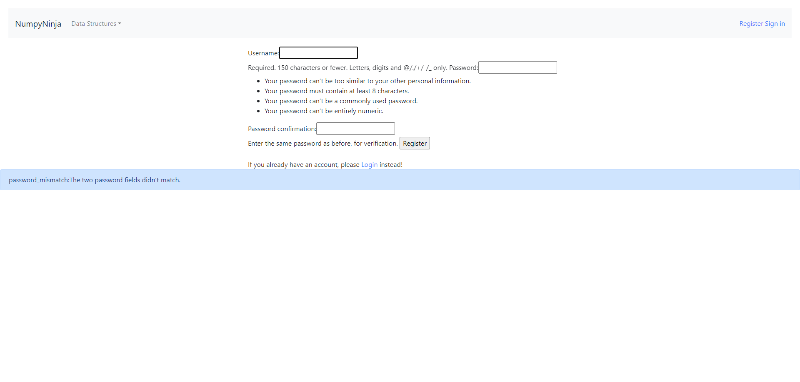
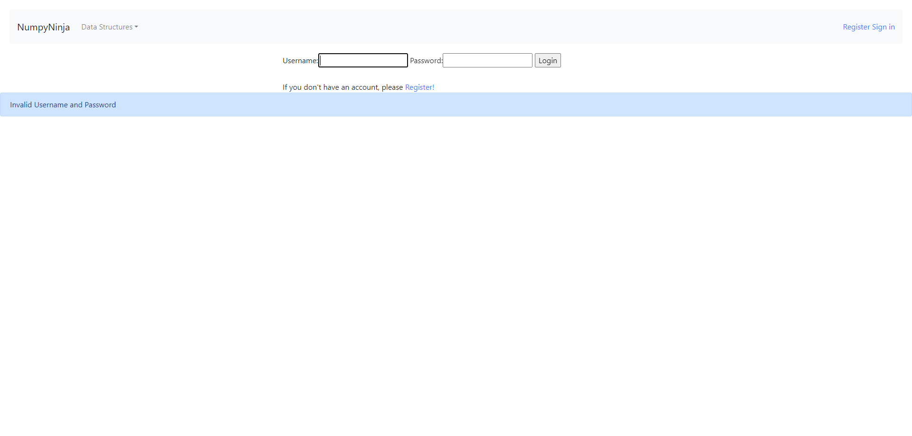
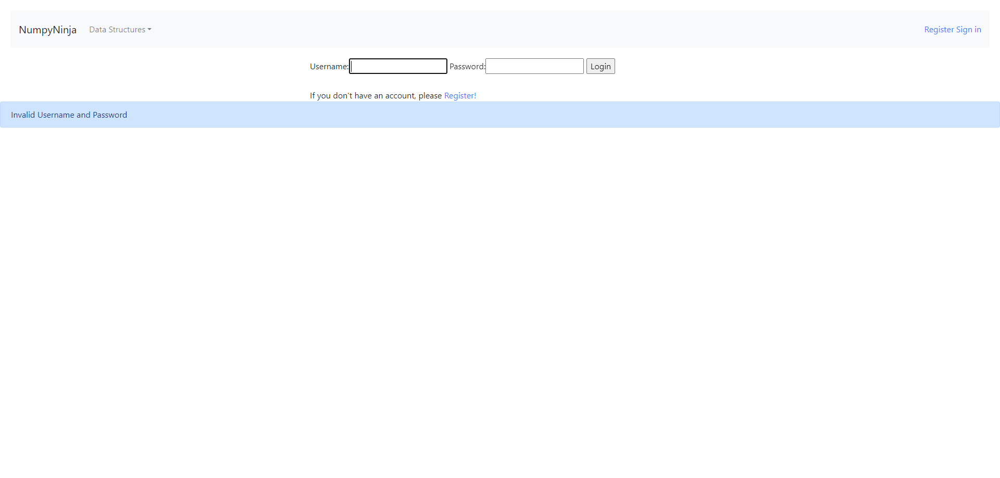
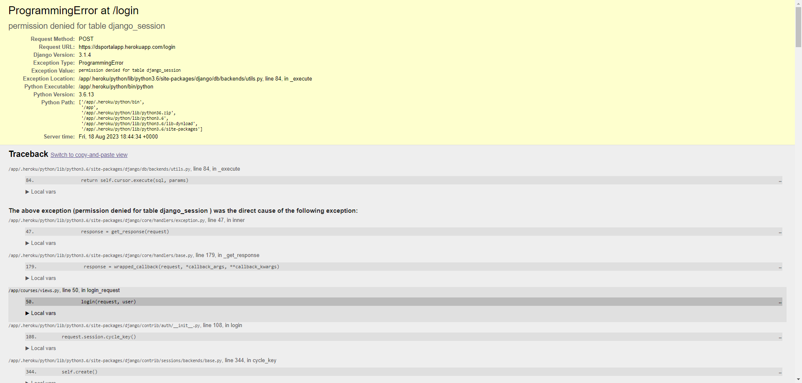
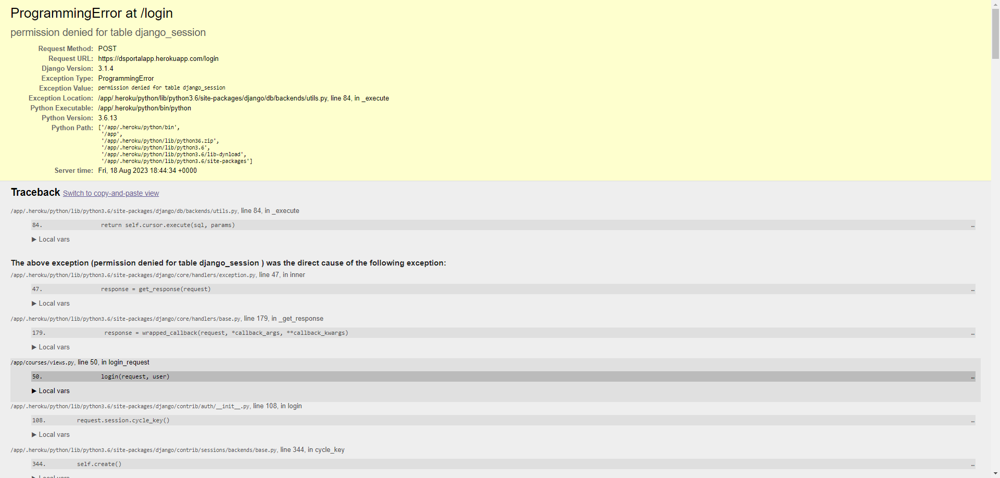
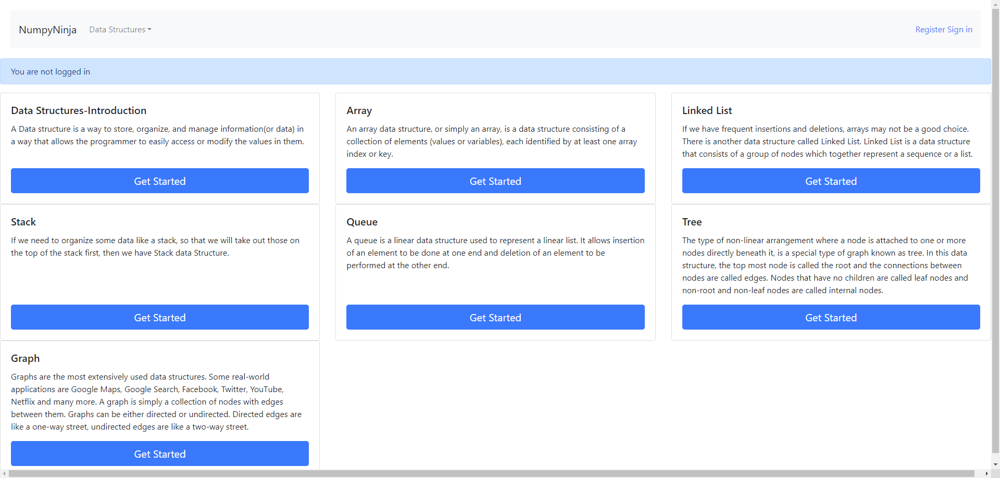

-
Open Ds algo portal url
2:44:13 PM / 00:00:00:620 Pass
Open Ds algo portal url
08.18.2023 2:44:13 PM 08.18.2023 2:44:13 PM 00:00:00:620 · #test-id=1I want to use this template for my feature filePassLaunch urlGiven The user is on Home pageWhen User click on Get Started buttonThen User is navigated to Home page -
User Navigated to Home Page
2:44:13 PM / 00:00:07:328 Pass
User Navigated to Home Page
08.18.2023 2:44:13 PM 08.18.2023 2:44:21 PM 00:00:07:328 · #test-id=10I want to use this template for my feature filePassUser is on Home page and click getstarted link on home page without sign inPassUser is on Home page and click getstarted link on home page without sign inGiven The user is on Home pageWhen The user clicks on Get Started link on homepage "Datastructures" without loginThen The user get warning message "You are not logged in"PassUser is on Home page and click getstarted link on home page without sign inGiven The user is on Home pageWhen The user clicks on Get Started link on homepage "Arrays" without loginThen The user get warning message "You are not logged in"PassUser is on Home page and click getstarted link on home page without sign inGiven The user is on Home pageWhen The user clicks on Get Started link on homepage "Linkedlist" without loginThen The user get warning message "You are not logged in"PassUser is on Home page and click getstarted link on home page without sign inGiven The user is on Home pageWhen The user clicks on Get Started link on homepage "Stack" without loginThen The user get warning message "You are not logged in"PassUser is on Home page and click getstarted link on home page without sign inGiven The user is on Home pageWhen The user clicks on Get Started link on homepage "Queue" without loginThen The user get warning message "You are not logged in"PassUser is on Home page and click getstarted link on home page without sign inGiven The user is on Home pageWhen The user clicks on Get Started link on homepage "Tree" without loginThen The user get warning message "You are not logged in"PassUser is on Home page and click getstarted link on home page without sign inGiven The user is on Home pageWhen The user clicks on Get Started link on homepage "Graph" without loginThen The user get warning message "You are not logged in"PassUser is on Home page and click on dropdown "PassUser is on Home page and click on dropdown "Arrays" without sign inGiven The user is on Home pageWhen The user clicks on dropdown "Arrays"Then The second warning message "You are not logged in"PassUser is on Home page and click on dropdown "Linkedlist" without sign inGiven The user is on Home pageWhen The user clicks on dropdown "Linkedlist"Then The second warning message "You are not logged in"PassUser is on Home page and click on dropdown "Stack" without sign inGiven The user is on Home pageWhen The user clicks on dropdown "Stack"Then The second warning message "You are not logged in"PassUser is on Home page and click on dropdown "Queue" without sign inGiven The user is on Home pageWhen The user clicks on dropdown "Queue"Then The second warning message "You are not logged in"PassUser is on Home page and click on dropdown "Tree" without sign inGiven The user is on Home pageWhen The user clicks on dropdown "Tree"Then The second warning message "You are not logged in"PassUser is on Home page and click on dropdown "Graph" without sign inGiven The user is on Home pageWhen The user clicks on dropdown "Graph"Then The second warning message "You are not logged in"PassUser is on Home page and click on sign inGiven The user is on Home pageWhen The user clicks on signin linkThen The user redirected to login pagePassUser is on Home page and click on RegisterGiven The user is on Home pageWhen The user clicks on register linkThen The user redirected to Registration page -
Register page Validation
2:44:21 PM / 00:00:07:999 Fail
Register page Validation
08.18.2023 2:44:21 PM 08.18.2023 2:44:29 PM 00:00:07:999 · #test-id=133I want to use this template for my feature filePassThe user is presented with error message for empty fields below Username textboxGiven The user opens Register PageWhen The user clicks "Register" button with all fields emptyThen It should display an error message "Please fill out this field." below Username textboxPassThe user is presented with error message for empty fields below Password textboxGiven The user opens Register PageWhen The user clicks "Register" button after entering username with other fields emptyusername Numpy@sdet84_1 Then It should display an error message "Please fill out this field." below Password textboxPassThe user is presented with error message for empty fields below confirm Password textboxGiven The user opens Register PageWhen The user clicks "Register" button after entering "username" and "password" with Password Confirmation field emptyusername password Numpy@sdet84_1 testpassword Then It should display an error message "Please fill out this field." below Password Confirmation textboxFailThe user is presented with error message for invalid usernameGiven The user opens Register PageWhen The user enters a "username" with characters other than Letters, digits and "@/./+/-/_"username password password confirmation &**&**& testpassword testpassword Then It should display an error message "Please enter a valid username"Hooks.Hooks.afterstep(io.cucumber.java.Scenario)My screenshot PassThe user is presented with error message for password mismatchGiven The user opens Register PageWhen The user clicks "Register" button after entering valid "username" and different passwords in "password" and "password confirmation" fields
PassThe user is presented with error message for password mismatchGiven The user opens Register PageWhen The user clicks "Register" button after entering valid "username" and different passwords in "password" and "password confirmation" fieldsusername password password confirmation Numpy@sdet84_1 testpassword testpassword1 Then It should display an error message "password_mismatch:The two password fields didn’t match."FailThe user is presented with error message for password with characters less than 8Given The user opens Register PageWhen The user enters a valid "username" and "password" with characters less than 8username password password confirmation Numpy@sdet84_1 a1b2c3d a1b2c3d Then It should display an error message "Password should contain at least 8 characters"Hooks.Hooks.afterstep(io.cucumber.java.Scenario)My screenshot FailThe user is presented with error message for password with only numbersGiven The user opens Register PageWhen The user enters a valid "username" and "password" with only numbers
FailThe user is presented with error message for password with only numbersGiven The user opens Register PageWhen The user enters a valid "username" and "password" with only numbersusername password password confirmation Numpy@sdet84_1 12345678 12345678 Then It should display an error message "Password can’t be entirely numeric."Hooks.Hooks.afterstep(io.cucumber.java.Scenario)My screenshot FailThe user is presented with error message for password too similar to your other personal informationGiven The user opens Register PageWhen The user enters a valid "username" and "password" similar to username
FailThe user is presented with error message for password too similar to your other personal informationGiven The user opens Register PageWhen The user enters a valid "username" and "password" similar to usernameusername password password confirmation Numpy@sdet84_1 testsdet84 testsdet84 Then It should display an error message "password can’t be too similar to your other personal information."Hooks.Hooks.afterstep(io.cucumber.java.Scenario)My screenshot FailThe user is presented with error message for commonly used passwordGiven The user opens Register PageWhen The user enters a valid "username" and commonly used password "password"
FailThe user is presented with error message for commonly used passwordGiven The user opens Register PageWhen The user enters a valid "username" and commonly used password "password"username password password confirmation Numpy@sdet84_1 Welcome1 Welcome1 Then It should display an error message "Password can’t be commonly used password"Hooks.Hooks.afterstep(io.cucumber.java.Scenario)My screenshot FailThe user is presented with error message for existing usernameGiven The user opens Register PageWhen The user enters a valid existing "username" with "password" and "password confirmation"
FailThe user is presented with error message for existing usernameGiven The user opens Register PageWhen The user enters a valid existing "username" with "password" and "password confirmation"username password password confirmation Numpy@sdet84_1 RT56YUabc RT56YUabc Then It should display an error message "Username already exists"Hooks.Hooks.afterstep(io.cucumber.java.Scenario)My screenshot FailThe user redirected to Homepage with valid detailsGiven The user opens Register PageWhen The user enters a valid "username" and "password" and "password confirmation"
FailThe user redirected to Homepage with valid detailsGiven The user opens Register PageWhen The user enters a valid "username" and "password" and "password confirmation"username password password confirmation Nump@sdet1029 siseli11 siseli11 Then The user should be redirected to Homepage with the message "New Account Created. You are logged in as" Hooks.Hooks.afterstep(io.cucumber.java.Scenario)My screenshotFailThe user is able to signout from the registered pageGiven The user is in the Sign in pageWhen The user clicks the "Sign Out" linkHooks.Hooks.afterstep(io.cucumber.java.Scenario)My screenshot Then The user should be redirected to the homepage with the message "Logged out successfully"Step skipped
Then The user should be redirected to the homepage with the message "Logged out successfully"Step skipped -
Validating Sign in page
2:44:29 PM / 00:00:06:950 Fail
Validating Sign in page
08.18.2023 2:44:29 PM 08.18.2023 2:44:36 PM 00:00:06:950 · #test-id=230I want to use this template for my feature filePassVerifying Register linkGiven The user is on signin pageWhen The user clicks on register link on signin pageThen The user redirected to Registration page from signin pagePassUser on login page and login with the fields empty "" and " " PassUser on login page and login with the fields empty "" and ""Given The user is on Sign in pageWhen The user enter invalid "" and ""Then click login button to verifyPassUser on login page and login with the fields empty "user" and ""Given The user is on Sign in pageWhen The user enter invalid "user" and ""Then click login button to verifyPassUser on login page and login with the fields empty "" and "passowrd"Given The user is on Sign in pageWhen The user enter invalid "" and "passowrd"Then click login button to verifyFailUser on login page and login with invalid and valid inputs from Excel "" and FailUser on login page and login with invalid and valid inputs from Excel "Sheet1" and 0Given The user is on Login pageWhen The user enter sheet "Sheet1" and 0Then click login buttonHooks.Hooks.afterstep(io.cucumber.java.Scenario)My screenshot FailUser on login page and login with invalid and valid inputs from Excel "Sheet1" and 1Given The user is on Login pageWhen The user enter sheet "Sheet1" and 1Then click login buttonHooks.Hooks.afterstep(io.cucumber.java.Scenario)My screenshotPassUser on login page and login with invalid and valid inputs from Excel "Sheet1" and 2Given The user is on Login pageWhen The user enter sheet "Sheet1" and 2Then click login buttonFailUser on login page and login with invalid and valid inputs from Excel "Sheet1" and 3Given The user is on Login pageWhen The user enter sheet "Sheet1" and 3Then click login buttonHooks.Hooks.afterstep(io.cucumber.java.Scenario)My screenshotFailVerifying signout linkGiven The user is on signin page with valid username "nump@SDET120" and password "sesili12"When The user click signout buttonHooks.Hooks.afterstep(io.cucumber.java.Scenario)My screenshotThen The user redirected to homepageStep skippedPassSignin to Navigate through modulesGiven The user clicks sign in buttonAnd enter valid username "nump@SDET120" and password "sesili12"When The user clicks login button
FailUser on login page and login with invalid and valid inputs from Excel "Sheet1" and 1Given The user is on Login pageWhen The user enter sheet "Sheet1" and 1Then click login buttonHooks.Hooks.afterstep(io.cucumber.java.Scenario)My screenshotPassUser on login page and login with invalid and valid inputs from Excel "Sheet1" and 2Given The user is on Login pageWhen The user enter sheet "Sheet1" and 2Then click login buttonFailUser on login page and login with invalid and valid inputs from Excel "Sheet1" and 3Given The user is on Login pageWhen The user enter sheet "Sheet1" and 3Then click login buttonHooks.Hooks.afterstep(io.cucumber.java.Scenario)My screenshotFailVerifying signout linkGiven The user is on signin page with valid username "nump@SDET120" and password "sesili12"When The user click signout buttonHooks.Hooks.afterstep(io.cucumber.java.Scenario)My screenshotThen The user redirected to homepageStep skippedPassSignin to Navigate through modulesGiven The user clicks sign in buttonAnd enter valid username "nump@SDET120" and password "sesili12"When The user clicks login button -
Evaluate Data stuructures Introduction
2:44:36 PM / 00:00:02:506 Fail
Evaluate Data stuructures Introduction
08.18.2023 2:44:36 PM 08.18.2023 2:44:38 PM 00:00:02:506 · #test-id=313FailUser is able to navigate Data Structures IntroductionFailUser is able to navigate Data Structures IntroductionGiven User click on Get started button in data Structures moduleHooks.Hooks.afterstep(io.cucumber.java.Scenario)My screenshot When User click on Time Complexity buttonStep skippedAnd click Try here button and navigate to try edidor pageStep skippedWhen The user enter valid python code in tryEditor from sheet "Sheet2" and 0Step skippedAnd User click on run buttonStep skippedThen User should be presented with run resultStep skippedPassUser is able to navigate to tryeditor page and run invalid python codePassUser is able to navigate to tryeditor page and run invalid python codeGiven The user is on try edidor pageWhen The user enter invalid python code in tryEditor from sheet "Sheet2" and 1And User click on run buttonThen User should get alert messageFailUser is able to navigate to practice questionsGiven User click on practice questonsHooks.Hooks.afterstep(io.cucumber.java.Scenario)My screenshotAnd Navigate back to data stuctures introduction pageStep skipped
When User click on Time Complexity buttonStep skippedAnd click Try here button and navigate to try edidor pageStep skippedWhen The user enter valid python code in tryEditor from sheet "Sheet2" and 0Step skippedAnd User click on run buttonStep skippedThen User should be presented with run resultStep skippedPassUser is able to navigate to tryeditor page and run invalid python codePassUser is able to navigate to tryeditor page and run invalid python codeGiven The user is on try edidor pageWhen The user enter invalid python code in tryEditor from sheet "Sheet2" and 1And User click on run buttonThen User should get alert messageFailUser is able to navigate to practice questionsGiven User click on practice questonsHooks.Hooks.afterstep(io.cucumber.java.Scenario)My screenshotAnd Navigate back to data stuctures introduction pageStep skipped -
Evaluate arrays module
2:44:38 PM / 00:00:01:714 Fail
Evaluate arrays module
08.18.2023 2:44:38 PM 08.18.2023 2:44:40 PM 00:00:01:714 · #test-id=346I want to use this template for my feature filePassEvaluate Array ModuleGiven User is on Home pageWhen User clicks on array moduleThen User Navigated to Arrays PageFailEvaluate Arrays in Python linkGiven User is on Arrays PageWhen User clicks on array in Python linkHooks.Hooks.afterstep(io.cucumber.java.Scenario)My screenshotThen User Navigated to Arrays in Python PageStep skippedFailUser is able to navigate to tryeditor page and run valid python codeFailUser is able to navigate to tryeditor page and run valid python codeGiven User click on Try here button on Arrays in Python page and navigate to try editor pageHooks.Hooks.afterstep(io.cucumber.java.Scenario)When The user enter valid python code in tryEditor from sheet "Sheet2" and 2Step skippedAnd User click on run buttonStep skippedThen User should be presented with run resultStep skippedFailUser is able to navigate to tryeditor page and run invalid python codeFailUser is able to navigate to tryeditor page and run invalid python codeWhen The user enter invalid python code in tryEditor from sheet "Sheet2" and 3Hooks.Hooks.afterstep(io.cucumber.java.Scenario)And User click on run buttonStep skippedThen User should get alert messageStep skippedFailUser is able to navigate to tryeditor page and run valid python codeFailUser is able to navigate to tryeditor page and run valid python codeGiven User click on Arrays Using List topicHooks.Hooks.afterstep(io.cucumber.java.Scenario)And click Try here button and navigate to try edidor pageStep skippedWhen The user enter valid python code in tryEditor from sheet "Sheet2" and 4Step skippedAnd User click on run buttonStep skippedThen User should be presented with run resultStep skippedFailUser is able to navigate to tryeditor page and run invalid python codeFailUser is able to navigate to tryeditor page and run invalid python codeGiven User click on Arrays Using List topicHooks.Hooks.afterstep(io.cucumber.java.Scenario)And click Try here button and navigate to try edidor pageStep skippedWhen The user enter invalid python code in tryEditor from sheet "Sheet2" and 5Step skippedAnd User click on run buttonStep skippedThen User should get alert messageStep skippedFailUser is able to navigate to tryeditor page and run valid python codeFailUser is able to navigate to tryeditor page and run valid python codeGiven User click on basic Operations in ListsHooks.Hooks.afterstep(io.cucumber.java.Scenario)And click Try here button and navigate to try edidor pageStep skippedWhen The user enter valid python code in tryEditor from sheet "Sheet2" and 6Step skippedAnd User click on run buttonStep skippedThen User should be presented with run resultStep skippedFailUser is able to navigate to tryeditor page and run invalid python codeFailUser is able to navigate to tryeditor page and run invalid python codeGiven User click on basic Operations in ListsHooks.Hooks.afterstep(io.cucumber.java.Scenario)And click Try here button and navigate to try edidor pageStep skippedWhen The user enter invalid python code in tryEditor from sheet "Sheet2" and 7Step skippedAnd User click on run buttonStep skippedThen User should get alert messageStep skippedFailUser is able to navigate to tryeditor page and run valid python codeFailUser is able to navigate to tryeditor page and run valid python codeGiven User click on Applications of ArrayHooks.Hooks.afterstep(io.cucumber.java.Scenario)And click Try here button and navigate to try edidor pageStep skippedWhen The user enter valid python code in tryEditor from sheet "Sheet2" and 8Step skippedAnd User click on run buttonStep skippedThen User should be presented with run resultStep skippedFailUser is able to navigate to tryeditor page and run invalid python codeFailUser is able to navigate to tryeditor page and run invalid python codeGiven User click on Applications of ArrayHooks.Hooks.afterstep(io.cucumber.java.Scenario)And click Try here button and navigate to try edidor pageStep skippedWhen The user enter invalid python code in tryEditor from sheet "Sheet2" and 9Step skippedAnd User click on run buttonStep skippedThen User should get alert messageStep skippedFailUser is able to navigate to tryeditor page and run valid python codeFailUser is able to navigate to tryeditor page and run valid python codeGiven User click on Practies QuestionsHooks.Hooks.afterstep(io.cucumber.java.Scenario)When User click on Question1 its navigate to tryeditor pageStep skippedAnd User clear the tryeditor textboxStep skippedWhen The user enter valid python code in tryEditor from sheet "Sheet2" and 10Step skippedAnd User click on run buttonStep skippedThen User should be presented with run resultStep skippedFailUser is able to navigate to tryeditor page and run invalid python codeFailUser is able to navigate to tryeditor page and run invalid python codeWhen User click on Question1 its navigate to tryeditor pageHooks.Hooks.afterstep(io.cucumber.java.Scenario)And User clear the tryeditor textboxStep skippedWhen The user enter invalid python code in tryEditor from sheet "Sheet2" and 11Step skippedAnd User click on run buttonStep skippedThen User should get alert messageStep skippedFailUser is able to navigate to tryeditor page and submit valid python codeFailUser is able to navigate to tryeditor page and submit valid python codeWhen User click on Question1 its navigate to tryeditor pageHooks.Hooks.afterstep(io.cucumber.java.Scenario)And User clear the tryeditor textboxStep skippedWhen The user enter invalid python code in tryEditor from sheet "Sheet2" and 12Step skippedAnd User click on submit buttonStep skippedThen The user should be presented with successful submission messageStep skippedFailUser is able to navigate to tryeditor page and run valid python codeFailUser is able to navigate to tryeditor page and run valid python codeWhen User click on Question2 its navigate to tryeditor pageHooks.Hooks.afterstep(io.cucumber.java.Scenario)And User clear the tryeditor textboxStep skippedWhen The user enter valid python code in tryEditor from sheet "Sheet2" and 0Step skippedAnd User click on run buttonStep skippedThen User should be presented with run resultStep skippedFailUser is able to navigate to tryeditor page and run invalid python codeFailUser is able to navigate to tryeditor page and run invalid python codeWhen User click on Question2 its navigate to tryeditor pageHooks.Hooks.afterstep(io.cucumber.java.Scenario)And User clear the tryeditor textboxStep skippedWhen The user enter invalid python code in tryEditor from sheet "Sheet2" and 1Step skippedAnd User click on run buttonStep skippedThen User should get alert messageStep skippedFailUser is able to navigate to tryeditor page and run valid python codeFailUser is able to navigate to tryeditor page and run valid python codeWhen User click on Question3 its navigate to tryeditor pageHooks.Hooks.afterstep(io.cucumber.java.Scenario)And User clear the tryeditor textboxStep skippedWhen The user enter valid python code in tryEditor from sheet "Sheet2" and 0Step skippedAnd User click on run buttonStep skippedThen User should be presented with run resultStep skippedFailUser is able to navigate to tryeditor page and run invalid python codeFailUser is able to navigate to tryeditor page and run invalid python codeWhen User click on Question3 its navigate to tryeditor pageHooks.Hooks.afterstep(io.cucumber.java.Scenario)And User clear the tryeditor textboxStep skippedWhen The user enter invalid python code in tryEditor from sheet "Sheet2" and 1Step skippedAnd User click on run buttonStep skippedThen User should get alert messageStep skippedFailUser is able to navigate to tryeditor page and run valid python codeFailUser is able to navigate to tryeditor page and run valid python codeWhen User click on Question4 its navigate to tryeditor pageHooks.Hooks.afterstep(io.cucumber.java.Scenario)And User clear the tryeditor textboxStep skippedWhen The user enter valid python code in tryEditor from sheet "Sheet2" and 0Step skippedAnd User click on run buttonStep skippedThen User should be presented with run resultStep skippedFailUser is able to navigate to tryeditor page and run invalid python codeFailUser is able to navigate to tryeditor page and run invalid python codeWhen User click on Question4 its navigate to tryeditor pageHooks.Hooks.afterstep(io.cucumber.java.Scenario)And User clear the tryeditor textboxStep skippedWhen The user enter invalid python code in tryEditor from sheet "Sheet2" and 1Step skippedAnd User click on run buttonStep skippedThen User should get alert messageStep skippedThen Navigate back to Home pageStep skipped -
Evaluate Linkedlist Module
2:44:40 PM / 00:00:00:277 Fail
Evaluate Linkedlist Module
08.18.2023 2:44:40 PM 08.18.2023 2:44:40 PM 00:00:00:277 · #test-id=582I want to use this template for my feature fileFailUser is able to navigate Linked ListFailUser is able to navigate Linked ListGiven User click on Get started button on Linked List moduleHooks.Hooks.afterstep(io.cucumber.java.Scenario)When User click on Intoduction linktextStep skippedAnd click Try here button and navigate to try edidor pageStep skippedWhen The user enter valid python code in tryEditor from sheet "Sheet2" and 0Step skippedAnd User click on run buttonStep skippedThen User should be presented with run resultStep skippedFailUser is able to navigate to tryeditor page and run invalid python codeFailUser is able to navigate to tryeditor page and run invalid python codeGiven The user is on try edidor pageHooks.Hooks.afterstep(io.cucumber.java.Scenario)When The user enter invalid python code in tryEditor from sheet "Sheet2" and 1Step skippedAnd User click on run buttonStep skippedThen User should get alert messageStep skippedFailUser is able to navigate to tryeditor page and run valid python codeFailUser is able to navigate to tryeditor page and run valid python codeGiven User click on Creating Linked List textHooks.Hooks.afterstep(io.cucumber.java.Scenario)And click Try here button and navigate to try edidor pageStep skippedWhen The user enter valid python code in tryEditor from sheet "Sheet2" and 0Step skippedAnd User click on run buttonStep skippedThen User should be presented with run resultStep skippedFailUser is able to navigate to tryeditor page and run invalid python codeFailUser is able to navigate to tryeditor page and run invalid python codeGiven The user is on try edidor pageHooks.Hooks.afterstep(io.cucumber.java.Scenario)When The user enter invalid python code in tryEditor from sheet "Sheet2" and 1Step skippedAnd User click on run buttonStep skippedThen User should get alert messageStep skippedFailUser is able to navigate to tryeditor page and run valid python codeFailUser is able to navigate to tryeditor page and run valid python codeGiven User click on Types of Linked List textHooks.Hooks.afterstep(io.cucumber.java.Scenario)And click Try here button and navigate to try edidor pageStep skippedWhen The user enter valid python code in tryEditor from sheet "Sheet2" and 0Step skippedAnd User click on run buttonStep skippedThen User should be presented with run resultStep skippedFailUser is able to navigate to tryeditor page and run invalid python codeFailUser is able to navigate to tryeditor page and run invalid python codeGiven The user is on try edidor pageHooks.Hooks.afterstep(io.cucumber.java.Scenario)When The user enter invalid python code in tryEditor from sheet "Sheet2" and 1Step skippedAnd User click on run buttonStep skippedThen User should get alert messageStep skippedFailUser is able to navigate to tryeditor page and run valid python codeFailUser is able to navigate to tryeditor page and run valid python codeGiven User click on Implement LinkedList in python textHooks.Hooks.afterstep(io.cucumber.java.Scenario)And click Try here button and navigate to try edidor pageStep skippedWhen The user enter valid python code in tryEditor from sheet "Sheet2" and 0Step skippedAnd User click on run buttonStep skippedThen User should be presented with run resultStep skippedFailUser is able to navigate to tryeditor page and run invalid python codeFailUser is able to navigate to tryeditor page and run invalid python codeGiven The user is on try edidor pageHooks.Hooks.afterstep(io.cucumber.java.Scenario)When The user enter invalid python code in tryEditor from sheet "Sheet2" and 1Step skippedAnd User click on run buttonStep skippedThen User should get alert messageStep skippedFailUser is able to navigate to tryeditor page and run valid python codeFailUser is able to navigate to tryeditor page and run valid python codeGiven User click on Travesal textHooks.Hooks.afterstep(io.cucumber.java.Scenario)And click Try here button and navigate to try edidor pageStep skippedWhen The user enter valid python code in tryEditor from sheet "Sheet2" and 0Step skippedAnd User click on run buttonStep skippedThen User should be presented with run resultStep skippedFailUser is able to navigate to tryeditor page and run invalid python codeFailUser is able to navigate to tryeditor page and run invalid python codeGiven The user is on try edidor pageHooks.Hooks.afterstep(io.cucumber.java.Scenario)When The user enter invalid python code in tryEditor from sheet "Sheet2" and 1Step skippedAnd User click on run buttonStep skippedThen User should get alert messageStep skippedFailUser is able to navigate to tryeditor page and run valid python codeFailUser is able to navigate to tryeditor page and run valid python codeGiven User click on Insertion textHooks.Hooks.afterstep(io.cucumber.java.Scenario)And click Try here button and navigate to try edidor pageStep skippedWhen The user enter valid python code in tryEditor from sheet "Sheet2" and 0Step skippedAnd User click on run buttonStep skippedThen User should be presented with run resultStep skippedFailUser is able to navigate to tryeditor page and run invalid python codeFailUser is able to navigate to tryeditor page and run invalid python codeGiven The user is on try edidor pageHooks.Hooks.afterstep(io.cucumber.java.Scenario)When The user enter invalid python code in tryEditor from sheet "Sheet2" and 1Step skippedAnd User click on run buttonStep skippedThen User should get alert messageStep skippedFailUser is able to navigate to tryeditor page and run valid python codeFailUser is able to navigate to tryeditor page and run valid python codeGiven User click on Deletion textHooks.Hooks.afterstep(io.cucumber.java.Scenario)And click Try here button and navigate to try edidor pageStep skippedWhen The user enter valid python code in tryEditor from sheet "Sheet2" and 0Step skippedAnd User click on run buttonStep skippedThen User should be presented with run resultStep skippedFailUser is able to navigate to tryeditor page and run invalid python codeFailUser is able to navigate to tryeditor page and run invalid python codeGiven The user is on try edidor pageHooks.Hooks.afterstep(io.cucumber.java.Scenario)When The user enter invalid python code in tryEditor from sheet "Sheet2" and 1Step skippedAnd User click on run buttonStep skippedThen User should get alert messageStep skippedFailUser validating Practice Questions Page and navigate back to home pageGiven The user is in Deletion page pageHooks.Hooks.afterstep(io.cucumber.java.Scenario)When User click on practice questons in Deletion pageStep skippedThen Navigate back to Practice Questions of Linked List PageStep skippedThen Navigate back to HomepageStep skipped -
Evaluate Stack Module
2:44:40 PM / 00:00:00:091 Fail
Evaluate Stack Module
08.18.2023 2:44:40 PM 08.18.2023 2:44:40 PM 00:00:00:091 · #test-id=763I want to use this template for my feature fileFailUser is able to navigate StackFailUser is able to navigate StackGiven User click on Get started button in Stack moduleHooks.Hooks.afterstep(io.cucumber.java.Scenario)When User click on Operations in Stack buttonStep skippedAnd click Try here button and navigate to try edidor pageStep skippedWhen The user enter valid python code in tryEditor from sheet "Sheet2" and 0Step skippedAnd User click on run buttonStep skippedThen User should be presented with run resultStep skippedFailUser is able to navigate to tryeditor page and run invalid python codeFailUser is able to navigate to tryeditor page and run invalid python codeGiven The user is on try edidor pageHooks.Hooks.afterstep(io.cucumber.java.Scenario)When The user enter invalid python code in tryEditor from sheet "Sheet2" and 1Step skippedAnd User click on run buttonStep skippedThen User should get alert messageStep skippedFailUser is able to navigate to tryeditor page and run valid python codeFailUser is able to navigate to tryeditor page and run valid python codeGiven User click on Implementation textHooks.Hooks.afterstep(io.cucumber.java.Scenario)And click Try here button and navigate to try edidor pageStep skippedWhen The user enter valid python code in tryEditor from sheet "Sheet2" and 0Step skippedAnd User click on run buttonStep skippedThen User should be presented with run resultStep skippedFailUser is able to navigate to tryeditor page and run invalid python codeFailUser is able to navigate to tryeditor page and run invalid python codeGiven The user is on try edidor pageHooks.Hooks.afterstep(io.cucumber.java.Scenario)When The user enter invalid python code in tryEditor from sheet "Sheet2" and 1Step skippedAnd User click on run buttonStep skippedThen User should get alert messageStep skippedFailUser is able to navigate to tryeditor page and run valid python codeFailUser is able to navigate to tryeditor page and run valid python codeGiven User click on Applications textHooks.Hooks.afterstep(io.cucumber.java.Scenario)And click Try here button and navigate to try edidor pageStep skippedWhen The user enter valid python code in tryEditor from sheet "Sheet2" and 0Step skippedAnd User click on run buttonStep skippedThen User should be presented with run resultStep skippedFailUser is able to navigate to tryeditor page and run invalid python codeFailUser is able to navigate to tryeditor page and run invalid python codeGiven The user is on try edidor pageHooks.Hooks.afterstep(io.cucumber.java.Scenario)When The user enter invalid python code in tryEditor from sheet "Sheet2" and 1Step skippedAnd User click on run buttonStep skippedThen User should get alert messageStep skippedFailUser validating Practice Questions Page and navigate back to home pageGiven The user is in Application page pageHooks.Hooks.afterstep(io.cucumber.java.Scenario)When User click on practice questons in Application pageStep skippedThen Navigate back to Application pageStep skippedThen Navigate back to HomepageStep skipped -
Evaluate Queue module
2:44:40 PM / 00:00:00:123 Fail
Evaluate Queue module
08.18.2023 2:44:40 PM 08.18.2023 2:44:40 PM 00:00:00:123 · #test-id=848I want to use this template for my feature fileFailUser is able to navigate QueueFailUser is able to navigate QueueGiven User click on Get started button in Queue moduleHooks.Hooks.afterstep(io.cucumber.java.Scenario)When User click on Implementation of Queue in PythonStep skippedAnd click Try here button and navigate to try edidor pageStep skippedWhen The user enter valid python code in tryEditor from sheet "Sheet2" and 0Step skippedAnd User click on run buttonStep skippedThen User should be presented with run resultStep skippedFailUser is able to navigate to tryeditor page and run invalid python codeFailUser is able to navigate to tryeditor page and run invalid python codeGiven The user is on try edidor pageHooks.Hooks.afterstep(io.cucumber.java.Scenario)When The user enter invalid python code in tryEditor from sheet "Sheet2" and 1Step skippedAnd User click on run buttonStep skippedThen User should get alert messageStep skippedFailUser is able to navigate to tryeditor page and run valid python codeFailUser is able to navigate to tryeditor page and run valid python codeGiven User click on Implementation using collections textHooks.Hooks.afterstep(io.cucumber.java.Scenario)And click Try here button and navigate to try edidor pageStep skippedWhen The user enter valid python code in tryEditor from sheet "Sheet2" and 0Step skippedAnd User click on run buttonStep skippedThen User should be presented with run resultStep skippedFailUser is able to navigate to tryeditor page and run invalid python codeFailUser is able to navigate to tryeditor page and run invalid python codeGiven The user is on try edidor pageHooks.Hooks.afterstep(io.cucumber.java.Scenario)When The user enter invalid python code in tryEditor from sheet "Sheet2" and 1Step skippedAnd User click on run buttonStep skippedThen User should get alert messageStep skippedFailUser is able to navigate to tryeditor page and run valid python codeFailUser is able to navigate to tryeditor page and run valid python codeGiven User click on Implementation using array textHooks.Hooks.afterstep(io.cucumber.java.Scenario)And click Try here button and navigate to try edidor pageStep skippedWhen The user enter valid python code in tryEditor from sheet "Sheet2" and 0Step skippedAnd User click on run buttonStep skippedThen User should be presented with run resultStep skippedFailUser is able to navigate to tryeditor page and run invalid python codeFailUser is able to navigate to tryeditor page and run invalid python codeGiven The user is on try edidor pageHooks.Hooks.afterstep(io.cucumber.java.Scenario)When The user enter invalid python code in tryEditor from sheet "Sheet2" and 1Step skippedAnd User click on run buttonStep skippedThen User should get alert messageStep skippedFailUser is able to navigate to tryeditor page and run valid python codeFailUser is able to navigate to tryeditor page and run valid python codeGiven User click on Queue Operations textHooks.Hooks.afterstep(io.cucumber.java.Scenario)And click Try here button and navigate to try edidor pageStep skippedWhen The user enter valid python code in tryEditor from sheet "Sheet2" and 0Step skippedAnd User click on run buttonStep skippedThen User should be presented with run resultStep skippedFailUser is able to navigate to tryeditor page and run invalid python codeFailUser is able to navigate to tryeditor page and run invalid python codeGiven The user is on try edidor pageHooks.Hooks.afterstep(io.cucumber.java.Scenario)When The user enter invalid python code in tryEditor from sheet "Sheet2" and 1Step skippedAnd User click on run buttonStep skippedThen User should get alert messageStep skippedFailUser validating Practice Questions Page and navigate back to home pageGiven The user is in Queue operations pageHooks.Hooks.afterstep(io.cucumber.java.Scenario)When User click on practice questons in Queue operations pageStep skippedThen Navigate back to Queue operations pageStep skippedThen Navigate back to HomepageStep skipped -
Evaluate Tree module
2:44:40 PM / 00:00:00:520 Fail
Evaluate Tree module
08.18.2023 2:44:40 PM 08.18.2023 2:44:41 PM 00:00:00:520 · #test-id=957I want to use this template for my feature fileFailUser is able to navigate TreeFailUser is able to navigate TreeGiven User click on Get started button on Tree moduleHooks.Hooks.afterstep(io.cucumber.java.Scenario)When User click on Overview of Trees buttonStep skippedAnd click Try here button and navigate to try edidor pageStep skippedWhen The user enter valid python code in tryEditor from sheet "Sheet2" and 0Step skippedAnd User click on run buttonStep skippedThen User should be presented with run resultStep skippedFailUser is able to navigate to tryeditor page and run invalid python codeFailUser is able to navigate to tryeditor page and run invalid python codeGiven The user is on try edidor pageHooks.Hooks.afterstep(io.cucumber.java.Scenario)When The user enter invalid python code in tryEditor from sheet "Sheet2" and 1Step skippedAnd User click on run buttonStep skippedThen User should get alert messageStep skippedFailUser is able to navigate to tryeditor page and run valid python codeFailUser is able to navigate to tryeditor page and run valid python codeGiven User click on Terminologies textHooks.Hooks.afterstep(io.cucumber.java.Scenario)And click Try here button and navigate to try edidor pageStep skippedWhen The user enter valid python code in tryEditor from sheet "Sheet2" and 0Step skippedAnd User click on run buttonStep skippedThen User should be presented with run resultStep skippedFailUser is able to navigate to tryeditor page and run invalid python codeFailUser is able to navigate to tryeditor page and run invalid python codeGiven The user is on try edidor pageHooks.Hooks.afterstep(io.cucumber.java.Scenario)When The user enter invalid python code in tryEditor from sheet "Sheet2" and 1Step skippedAnd User click on run buttonStep skippedThen User should get alert messageStep skippedFailUser is able to navigate to tryeditor page and run valid python codeFailUser is able to navigate to tryeditor page and run valid python codeGiven User click on Type of Trees textHooks.Hooks.afterstep(io.cucumber.java.Scenario)And click Try here button and navigate to try edidor pageStep skippedWhen The user enter valid python code in tryEditor from sheet "Sheet2" and 0Step skippedAnd User click on run buttonStep skippedThen User should be presented with run resultStep skippedFailUser is able to navigate to tryeditor page and run invalid python codeFailUser is able to navigate to tryeditor page and run invalid python codeGiven The user is on try edidor pageHooks.Hooks.afterstep(io.cucumber.java.Scenario)When The user enter invalid python code in tryEditor from sheet "Sheet2" and 1Step skippedAnd User click on run buttonStep skippedThen User should get alert messageStep skippedFailUser is able to navigate to tryeditor page and run valid python codeFailUser is able to navigate to tryeditor page and run valid python codeGiven User click on Tree Traversals textHooks.Hooks.afterstep(io.cucumber.java.Scenario)And click Try here button and navigate to try edidor pageStep skippedWhen The user enter valid python code in tryEditor from sheet "Sheet2" and 0Step skippedAnd User click on run buttonStep skippedThen User should be presented with run resultStep skippedFailUser is able to navigate to tryeditor page and run invalid python codeFailUser is able to navigate to tryeditor page and run invalid python codeGiven The user is on try edidor pageHooks.Hooks.afterstep(io.cucumber.java.Scenario)When The user enter invalid python code in tryEditor from sheet "Sheet2" and 1Step skippedAnd User click on run buttonStep skippedThen User should get alert messageStep skippedFailUser is able to navigate to tryeditor page and run valid python codeFailUser is able to navigate to tryeditor page and run valid python codeGiven User click on Traversal Illustration textHooks.Hooks.afterstep(io.cucumber.java.Scenario)And click Try here button and navigate to try edidor pageStep skippedWhen The user enter valid python code in tryEditor from sheet "Sheet2" and 0Step skippedAnd User click on run buttonStep skippedThen User should be presented with run resultStep skippedFailUser is able to navigate to tryeditor page and run invalid python codeFailUser is able to navigate to tryeditor page and run invalid python codeGiven The user is on try edidor pageHooks.Hooks.afterstep(io.cucumber.java.Scenario)When The user enter invalid python code in tryEditor from sheet "Sheet2" and 1Step skippedAnd User click on run buttonStep skippedThen User should get alert messageStep skippedFailUser is able to navigate to tryeditor page and run valid python codeFailUser is able to navigate to tryeditor page and run valid python codeGiven User click on Binary Trees textHooks.Hooks.afterstep(io.cucumber.java.Scenario)And click Try here button and navigate to try edidor pageStep skippedWhen The user enter valid python code in tryEditor from sheet "Sheet2" and 0Step skippedAnd User click on run buttonStep skippedThen User should be presented with run resultStep skippedFailUser is able to navigate to tryeditor page and run invalid python codeFailUser is able to navigate to tryeditor page and run invalid python codeGiven The user is on try edidor pageHooks.Hooks.afterstep(io.cucumber.java.Scenario)When The user enter invalid python code in tryEditor from sheet "Sheet2" and 1Step skippedAnd User click on run buttonStep skippedThen User should get alert messageStep skippedFailUser is able to navigate to tryeditor page and run valid python codeFailUser is able to navigate to tryeditor page and run valid python codeGiven User click on Type of Binary Trees textHooks.Hooks.afterstep(io.cucumber.java.Scenario)And click Try here button and navigate to try edidor pageStep skippedWhen The user enter valid python code in tryEditor from sheet "Sheet2" and 0Step skippedAnd User click on run buttonStep skippedThen User should be presented with run resultStep skippedFailUser is able to navigate to tryeditor page and run invalid python codeFailUser is able to navigate to tryeditor page and run invalid python codeGiven The user is on try edidor pageHooks.Hooks.afterstep(io.cucumber.java.Scenario)When The user enter invalid python code in tryEditor from sheet "Sheet2" and 1Step skippedAnd User click on run buttonStep skippedThen User should get alert messageStep skippedFailUser is able to navigate to tryeditor page and run valid python codeFailUser is able to navigate to tryeditor page and run valid python codeGiven User click on Implementation in Python textHooks.Hooks.afterstep(io.cucumber.java.Scenario)And click Try here button and navigate to try edidor pageStep skippedWhen The user enter valid python code in tryEditor from sheet "Sheet2" and 0Step skippedAnd User click on run buttonStep skippedThen User should be presented with run resultStep skippedFailUser is able to navigate to tryeditor page and run invalid python codeFailUser is able to navigate to tryeditor page and run invalid python codeGiven The user is on try edidor pageHooks.Hooks.afterstep(io.cucumber.java.Scenario)When The user enter invalid python code in tryEditor from sheet "Sheet2" and 1Step skippedAnd User click on run buttonStep skippedThen User should get alert messageStep skippedFailUser is able to navigate to tryeditor page and run valid python codeFailUser is able to navigate to tryeditor page and run valid python codeGiven User click on Binary Tree Traversals textHooks.Hooks.afterstep(io.cucumber.java.Scenario)And click Try here button and navigate to try edidor pageStep skippedWhen The user enter valid python code in tryEditor from sheet "Sheet2" and 0Step skippedAnd User click on run buttonStep skippedThen User should be presented with run resultStep skippedFailUser is able to navigate to tryeditor page and run invalid python codeFailUser is able to navigate to tryeditor page and run invalid python codeGiven The user is on try edidor pageHooks.Hooks.afterstep(io.cucumber.java.Scenario)When The user enter invalid python code in tryEditor from sheet "Sheet2" and 1Step skippedAnd User click on run buttonStep skippedThen User should get alert messageStep skippedFailUser is able to navigate to tryeditor page and run valid python codeFailUser is able to navigate to tryeditor page and run valid python codeGiven User click on Implementation of Binary Trees textHooks.Hooks.afterstep(io.cucumber.java.Scenario)And click Try here button and navigate to try edidor pageStep skippedWhen The user enter valid python code in tryEditor from sheet "Sheet2" and 0Step skippedAnd User click on run buttonStep skippedThen User should be presented with run resultStep skippedFailUser is able to navigate to tryeditor page and run invalid python codeFailUser is able to navigate to tryeditor page and run invalid python codeGiven The user is on try edidor pageHooks.Hooks.afterstep(io.cucumber.java.Scenario)When The user enter invalid python code in tryEditor from sheet "Sheet2" and 1Step skippedAnd User click on run buttonStep skippedThen User should get alert messageStep skippedFailUser is able to navigate to tryeditor page and run valid python codeFailUser is able to navigate to tryeditor page and run valid python codeGiven User click on Applications of Binary trees textHooks.Hooks.afterstep(io.cucumber.java.Scenario)And click Try here button and navigate to try edidor pageStep skippedWhen The user enter valid python code in tryEditor from sheet "Sheet2" and 0Step skippedAnd User click on run buttonStep skippedThen User should be presented with run resultStep skippedFailUser is able to navigate to tryeditor page and run invalid python codeFailUser is able to navigate to tryeditor page and run invalid python codeGiven The user is on try edidor pageHooks.Hooks.afterstep(io.cucumber.java.Scenario)When The user enter invalid python code in tryEditor from sheet "Sheet2" and 1Step skippedAnd User click on run buttonStep skippedThen User should get alert messageStep skippedFailUser is able to navigate to tryeditor page and run valid python codeFailUser is able to navigate to tryeditor page and run valid python codeGiven User click on Binary Search trees textHooks.Hooks.afterstep(io.cucumber.java.Scenario)And click Try here button and navigate to try edidor pageStep skippedWhen The user enter valid python code in tryEditor from sheet "Sheet2" and 0Step skippedAnd User click on run buttonStep skippedThen User should be presented with run resultStep skippedFailUser is able to navigate to tryeditor page and run invalid python codeFailUser is able to navigate to tryeditor page and run invalid python codeGiven The user is on try edidor pageHooks.Hooks.afterstep(io.cucumber.java.Scenario)When The user enter invalid python code in tryEditor from sheet "Sheet2" and 1Step skippedAnd User click on run buttonStep skippedThen User should get alert messageStep skippedFailUser is able to navigate to tryeditor page and run valid python codeFailUser is able to navigate to tryeditor page and run valid python codeGiven User click on Implementation Of BST textHooks.Hooks.afterstep(io.cucumber.java.Scenario)And click Try here button and navigate to try edidor pageStep skippedWhen The user enter valid python code in tryEditor from sheet "Sheet2" and 0Step skippedAnd User click on run buttonStep skippedThen User should be presented with run resultStep skippedFailUser is able to navigate to tryeditor page and run invalid python codeFailUser is able to navigate to tryeditor page and run invalid python codeGiven The user is on try edidor pageHooks.Hooks.afterstep(io.cucumber.java.Scenario)When The user enter invalid python code in tryEditor from sheet "Sheet2" and 1Step skippedAnd User click on run buttonStep skippedThen User should get alert messageStep skippedFailUser validating Practice Questions Page and navigate back to home pageGiven The user is in Implementation of BST pageHooks.Hooks.afterstep(io.cucumber.java.Scenario)When User click on practice questons in Implementation of BSTStep skippedThen Navigate back to Implementation of BST pageStep skippedThen Navigate back to HomepageStep skipped -
Evaluate Graph module
2:44:41 PM / 00:00:00:064 Fail
Evaluate Graph module
08.18.2023 2:44:41 PM 08.18.2023 2:44:41 PM 00:00:00:064 · #test-id=1,282I want to use this template for my feature fileFailUser is able to navigate GraphFailUser is able to navigate GraphGiven User click on Get started button on Graph moduleHooks.Hooks.afterstep(io.cucumber.java.Scenario)When User click on Graph buttonStep skippedAnd click Try here button and navigate to try edidor pageStep skippedWhen The user enter valid python code in tryEditor from sheet "Sheet2" and 0Step skippedAnd User click on run buttonStep skippedThen User should be presented with run resultStep skippedFailUser is able to navigate to tryeditor page and run invalid python codeFailUser is able to navigate to tryeditor page and run invalid python codeGiven The user is on try edidor pageHooks.Hooks.afterstep(io.cucumber.java.Scenario)When The user enter invalid python code in tryEditor from sheet "Sheet2" and 1Step skippedAnd User click on run buttonStep skippedThen User should get alert messageStep skippedFailUser is able to navigate to tryeditor page and run valid python codeFailUser is able to navigate to tryeditor page and run valid python codeGiven User click on Graph Representations textHooks.Hooks.afterstep(io.cucumber.java.Scenario)And click Try here button and navigate to try edidor pageStep skippedWhen The user enter valid python code in tryEditor from sheet "Sheet2" and 0Step skippedAnd User click on run buttonStep skippedThen User should be presented with run resultStep skippedFailUser is able to navigate to tryeditor page and run invalid python codeFailUser is able to navigate to tryeditor page and run invalid python codeGiven The user is on try edidor pageHooks.Hooks.afterstep(io.cucumber.java.Scenario)When The user enter invalid python code in tryEditor from sheet "Sheet2" and 1Step skippedAnd User click on run buttonStep skippedThen User should get alert messageStep skippedFailUser validating Practice Questions Page and navigate back to home pageGiven The user is in Graph Representations pageHooks.Hooks.afterstep(io.cucumber.java.Scenario)When User click on practice questons in Graph Representations pageStep skippedThen Navigate back to Graph Representations pageStep skippedThen Navigate back to HomepageStep skippedFailUser is able to sign outGiven The user is on HomepageHooks.Hooks.afterstep(io.cucumber.java.Scenario)When The user clicks on sign out buttonStep skippedThen user able to sigout and navigate to home pageStep skipped
-
java.lang.AssertionError
9 tests
java.lang.AssertionError
9 failedStatus Timestamp TestName Fail 14:44:22 PM Then It should display an error message "Please enter a valid username" Register page Validation.The user is presented with error message for invalid username.Then It should display an error message "Please enter a valid username"Fail 14:44:24 PM Then It should display an error message "Password should contain at least 8 characters" Register page Validation.The user is presented with error message for password with characters less than 8.Then It should display an error message "Password should contain at least 8 characters"Fail 14:44:24 PM Then It should display an error message "Password can’t be entirely numeric." Register page Validation.The user is presented with error message for password with only numbers.Then It should display an error message "Password can’t be entirely numeric."Fail 14:44:25 PM Then It should display an error message "password can’t be too similar to your other personal information." Register page Validation.The user is presented with error message for password too similar to your other personal information.Then It should display an error message "password can’t be too similar to your other personal information."Fail 14:44:26 PM Then It should display an error message "Password can’t be commonly used password" Register page Validation.The user is presented with error message for commonly used password.Then It should display an error message "Password can’t be commonly used password"Fail 14:44:27 PM Then It should display an error message "Username already exists" Register page Validation.The user is presented with error message for existing username.Then It should display an error message "Username already exists"Fail 14:44:28 PM Then The user should be redirected to Homepage with the message "New Account Created. You are logged in as " Register page Validation.The user redirected to Homepage with valid details.Then The user should be redirected to Homepage with the message "New Account Created. You are logged in as" Fail 14:44:31 PM Then click login button Validating Sign in page.User on login page and login with invalid and valid inputs from Excel "Sheet1" and 0.Then click login buttonFail 14:44:32 PM Then click login button Validating Sign in page.User on login page and login with invalid and valid inputs from Excel "Sheet1" and 1.Then click login button -
org.openqa.selenium.NoSuchWindowException
161 tests
org.openqa.selenium.NoSuchWindowException
161 failedStatus Timestamp TestName Fail 14:44:39 PM Given User click on Try here button on Arrays in Python page and navigate to try editor page Evaluate arrays module.User is able to navigate to tryeditor page and run valid python code.Given User click on Try here button on Arrays in Python page and navigate to try editor pageFail 14:44:39 PM Hooks.Hooks.afterstep(io.cucumber.java.Scenario) Evaluate arrays module.User is able to navigate to tryeditor page and run valid python code.Hooks.Hooks.afterstep(io.cucumber.java.Scenario)Fail 14:44:39 PM Hooks.Hooks.afterstep(io.cucumber.java.Scenario) Evaluate arrays module.User is able to navigate to tryeditor page and run invalid python code.Hooks.Hooks.afterstep(io.cucumber.java.Scenario)Fail 14:44:39 PM Given User click on Arrays Using List topic Evaluate arrays module.User is able to navigate to tryeditor page and run valid python code.Given User click on Arrays Using List topicFail 14:44:39 PM Hooks.Hooks.afterstep(io.cucumber.java.Scenario) Evaluate arrays module.User is able to navigate to tryeditor page and run valid python code.Hooks.Hooks.afterstep(io.cucumber.java.Scenario)Fail 14:44:39 PM Given User click on Arrays Using List topic Evaluate arrays module.User is able to navigate to tryeditor page and run invalid python code.Given User click on Arrays Using List topicFail 14:44:39 PM Hooks.Hooks.afterstep(io.cucumber.java.Scenario) Evaluate arrays module.User is able to navigate to tryeditor page and run invalid python code.Hooks.Hooks.afterstep(io.cucumber.java.Scenario)Fail 14:44:39 PM Given User click on basic Operations in Lists Evaluate arrays module.User is able to navigate to tryeditor page and run valid python code.Given User click on basic Operations in ListsFail 14:44:39 PM Hooks.Hooks.afterstep(io.cucumber.java.Scenario) Evaluate arrays module.User is able to navigate to tryeditor page and run valid python code.Hooks.Hooks.afterstep(io.cucumber.java.Scenario)Fail 14:44:40 PM Given User click on basic Operations in Lists Evaluate arrays module.User is able to navigate to tryeditor page and run invalid python code.Given User click on basic Operations in ListsFail 14:44:40 PM Hooks.Hooks.afterstep(io.cucumber.java.Scenario) Evaluate arrays module.User is able to navigate to tryeditor page and run invalid python code.Hooks.Hooks.afterstep(io.cucumber.java.Scenario)Fail 14:44:40 PM Given User click on Applications of Array Evaluate arrays module.User is able to navigate to tryeditor page and run valid python code.Given User click on Applications of ArrayFail 14:44:40 PM Hooks.Hooks.afterstep(io.cucumber.java.Scenario) Evaluate arrays module.User is able to navigate to tryeditor page and run valid python code.Hooks.Hooks.afterstep(io.cucumber.java.Scenario)Fail 14:44:40 PM Given User click on Applications of Array Evaluate arrays module.User is able to navigate to tryeditor page and run invalid python code.Given User click on Applications of ArrayFail 14:44:40 PM Hooks.Hooks.afterstep(io.cucumber.java.Scenario) Evaluate arrays module.User is able to navigate to tryeditor page and run invalid python code.Hooks.Hooks.afterstep(io.cucumber.java.Scenario)Fail 14:44:40 PM Given User click on Practies Questions Evaluate arrays module.User is able to navigate to tryeditor page and run valid python code.Given User click on Practies QuestionsFail 14:44:40 PM Hooks.Hooks.afterstep(io.cucumber.java.Scenario) Evaluate arrays module.User is able to navigate to tryeditor page and run valid python code.Hooks.Hooks.afterstep(io.cucumber.java.Scenario)Fail 14:44:40 PM When User click on Question1 its navigate to tryeditor page Evaluate arrays module.User is able to navigate to tryeditor page and run invalid python code.When User click on Question1 its navigate to tryeditor pageFail 14:44:40 PM Hooks.Hooks.afterstep(io.cucumber.java.Scenario) Evaluate arrays module.User is able to navigate to tryeditor page and run invalid python code.Hooks.Hooks.afterstep(io.cucumber.java.Scenario)Fail 14:44:40 PM When User click on Question1 its navigate to tryeditor page Evaluate arrays module.User is able to navigate to tryeditor page and submit valid python code.When User click on Question1 its navigate to tryeditor pageFail 14:44:40 PM Hooks.Hooks.afterstep(io.cucumber.java.Scenario) Evaluate arrays module.User is able to navigate to tryeditor page and submit valid python code.Hooks.Hooks.afterstep(io.cucumber.java.Scenario)Fail 14:44:40 PM When User click on Question2 its navigate to tryeditor page Evaluate arrays module.User is able to navigate to tryeditor page and run valid python code.When User click on Question2 its navigate to tryeditor pageFail 14:44:40 PM Hooks.Hooks.afterstep(io.cucumber.java.Scenario) Evaluate arrays module.User is able to navigate to tryeditor page and run valid python code.Hooks.Hooks.afterstep(io.cucumber.java.Scenario)Fail 14:44:40 PM When User click on Question2 its navigate to tryeditor page Evaluate arrays module.User is able to navigate to tryeditor page and run invalid python code.When User click on Question2 its navigate to tryeditor pageFail 14:44:40 PM Hooks.Hooks.afterstep(io.cucumber.java.Scenario) Evaluate arrays module.User is able to navigate to tryeditor page and run invalid python code.Hooks.Hooks.afterstep(io.cucumber.java.Scenario)Fail 14:44:40 PM When User click on Question3 its navigate to tryeditor page Evaluate arrays module.User is able to navigate to tryeditor page and run valid python code.When User click on Question3 its navigate to tryeditor pageFail 14:44:40 PM Hooks.Hooks.afterstep(io.cucumber.java.Scenario) Evaluate arrays module.User is able to navigate to tryeditor page and run valid python code.Hooks.Hooks.afterstep(io.cucumber.java.Scenario)Fail 14:44:40 PM When User click on Question3 its navigate to tryeditor page Evaluate arrays module.User is able to navigate to tryeditor page and run invalid python code.When User click on Question3 its navigate to tryeditor pageFail 14:44:40 PM Hooks.Hooks.afterstep(io.cucumber.java.Scenario) Evaluate arrays module.User is able to navigate to tryeditor page and run invalid python code.Hooks.Hooks.afterstep(io.cucumber.java.Scenario)Fail 14:44:40 PM When User click on Question4 its navigate to tryeditor page Evaluate arrays module.User is able to navigate to tryeditor page and run valid python code.When User click on Question4 its navigate to tryeditor pageFail 14:44:40 PM Hooks.Hooks.afterstep(io.cucumber.java.Scenario) Evaluate arrays module.User is able to navigate to tryeditor page and run valid python code.Hooks.Hooks.afterstep(io.cucumber.java.Scenario)Fail 14:44:40 PM When User click on Question4 its navigate to tryeditor page Evaluate arrays module.User is able to navigate to tryeditor page and run invalid python code.When User click on Question4 its navigate to tryeditor pageFail 14:44:40 PM Hooks.Hooks.afterstep(io.cucumber.java.Scenario) Evaluate arrays module.User is able to navigate to tryeditor page and run invalid python code.Hooks.Hooks.afterstep(io.cucumber.java.Scenario)Fail 14:44:40 PM Given User click on Get started button on Linked List module Evaluate Linkedlist Module.User is able to navigate Linked List.Given User click on Get started button on Linked List moduleFail 14:44:40 PM Hooks.Hooks.afterstep(io.cucumber.java.Scenario) Evaluate Linkedlist Module.User is able to navigate Linked List.Hooks.Hooks.afterstep(io.cucumber.java.Scenario)Fail 14:44:40 PM Given The user is on try edidor page Evaluate Linkedlist Module.User is able to navigate to tryeditor page and run invalid python code.Given The user is on try edidor pageFail 14:44:40 PM Hooks.Hooks.afterstep(io.cucumber.java.Scenario) Evaluate Linkedlist Module.User is able to navigate to tryeditor page and run invalid python code.Hooks.Hooks.afterstep(io.cucumber.java.Scenario)Fail 14:44:40 PM Given User click on Creating Linked List text Evaluate Linkedlist Module.User is able to navigate to tryeditor page and run valid python code.Given User click on Creating Linked List textFail 14:44:40 PM Hooks.Hooks.afterstep(io.cucumber.java.Scenario) Evaluate Linkedlist Module.User is able to navigate to tryeditor page and run valid python code.Hooks.Hooks.afterstep(io.cucumber.java.Scenario)Fail 14:44:40 PM Given The user is on try edidor page Evaluate Linkedlist Module.User is able to navigate to tryeditor page and run invalid python code.Given The user is on try edidor pageFail 14:44:40 PM Hooks.Hooks.afterstep(io.cucumber.java.Scenario) Evaluate Linkedlist Module.User is able to navigate to tryeditor page and run invalid python code.Hooks.Hooks.afterstep(io.cucumber.java.Scenario)Fail 14:44:40 PM Given User click on Types of Linked List text Evaluate Linkedlist Module.User is able to navigate to tryeditor page and run valid python code.Given User click on Types of Linked List textFail 14:44:40 PM Hooks.Hooks.afterstep(io.cucumber.java.Scenario) Evaluate Linkedlist Module.User is able to navigate to tryeditor page and run valid python code.Hooks.Hooks.afterstep(io.cucumber.java.Scenario)Fail 14:44:40 PM Given The user is on try edidor page Evaluate Linkedlist Module.User is able to navigate to tryeditor page and run invalid python code.Given The user is on try edidor pageFail 14:44:40 PM Hooks.Hooks.afterstep(io.cucumber.java.Scenario) Evaluate Linkedlist Module.User is able to navigate to tryeditor page and run invalid python code.Hooks.Hooks.afterstep(io.cucumber.java.Scenario)Fail 14:44:40 PM Given User click on Implement LinkedList in python text Evaluate Linkedlist Module.User is able to navigate to tryeditor page and run valid python code.Given User click on Implement LinkedList in python textFail 14:44:40 PM Hooks.Hooks.afterstep(io.cucumber.java.Scenario) Evaluate Linkedlist Module.User is able to navigate to tryeditor page and run valid python code.Hooks.Hooks.afterstep(io.cucumber.java.Scenario)Fail 14:44:40 PM Given The user is on try edidor page Evaluate Linkedlist Module.User is able to navigate to tryeditor page and run invalid python code.Given The user is on try edidor pageFail 14:44:40 PM Hooks.Hooks.afterstep(io.cucumber.java.Scenario) Evaluate Linkedlist Module.User is able to navigate to tryeditor page and run invalid python code.Hooks.Hooks.afterstep(io.cucumber.java.Scenario)Fail 14:44:40 PM Given User click on Travesal text Evaluate Linkedlist Module.User is able to navigate to tryeditor page and run valid python code.Given User click on Travesal textFail 14:44:40 PM Hooks.Hooks.afterstep(io.cucumber.java.Scenario) Evaluate Linkedlist Module.User is able to navigate to tryeditor page and run valid python code.Hooks.Hooks.afterstep(io.cucumber.java.Scenario)Fail 14:44:40 PM Given The user is on try edidor page Evaluate Linkedlist Module.User is able to navigate to tryeditor page and run invalid python code.Given The user is on try edidor pageFail 14:44:40 PM Hooks.Hooks.afterstep(io.cucumber.java.Scenario) Evaluate Linkedlist Module.User is able to navigate to tryeditor page and run invalid python code.Hooks.Hooks.afterstep(io.cucumber.java.Scenario)Fail 14:44:40 PM Given User click on Insertion text Evaluate Linkedlist Module.User is able to navigate to tryeditor page and run valid python code.Given User click on Insertion textFail 14:44:40 PM Hooks.Hooks.afterstep(io.cucumber.java.Scenario) Evaluate Linkedlist Module.User is able to navigate to tryeditor page and run valid python code.Hooks.Hooks.afterstep(io.cucumber.java.Scenario)Fail 14:44:40 PM Given The user is on try edidor page Evaluate Linkedlist Module.User is able to navigate to tryeditor page and run invalid python code.Given The user is on try edidor pageFail 14:44:40 PM Hooks.Hooks.afterstep(io.cucumber.java.Scenario) Evaluate Linkedlist Module.User is able to navigate to tryeditor page and run invalid python code.Hooks.Hooks.afterstep(io.cucumber.java.Scenario)Fail 14:44:40 PM Given User click on Deletion text Evaluate Linkedlist Module.User is able to navigate to tryeditor page and run valid python code.Given User click on Deletion textFail 14:44:40 PM Hooks.Hooks.afterstep(io.cucumber.java.Scenario) Evaluate Linkedlist Module.User is able to navigate to tryeditor page and run valid python code.Hooks.Hooks.afterstep(io.cucumber.java.Scenario)Fail 14:44:40 PM Given The user is on try edidor page Evaluate Linkedlist Module.User is able to navigate to tryeditor page and run invalid python code.Given The user is on try edidor pageFail 14:44:40 PM Hooks.Hooks.afterstep(io.cucumber.java.Scenario) Evaluate Linkedlist Module.User is able to navigate to tryeditor page and run invalid python code.Hooks.Hooks.afterstep(io.cucumber.java.Scenario)Fail 14:44:40 PM Given The user is in Deletion page page Evaluate Linkedlist Module.User validating Practice Questions Page and navigate back to home page.Given The user is in Deletion page pageFail 14:44:40 PM Hooks.Hooks.afterstep(io.cucumber.java.Scenario) Evaluate Linkedlist Module.User validating Practice Questions Page and navigate back to home page.Hooks.Hooks.afterstep(io.cucumber.java.Scenario)Fail 14:44:40 PM Given User click on Get started button in Stack module Evaluate Stack Module.User is able to navigate Stack.Given User click on Get started button in Stack moduleFail 14:44:40 PM Hooks.Hooks.afterstep(io.cucumber.java.Scenario) Evaluate Stack Module.User is able to navigate Stack.Hooks.Hooks.afterstep(io.cucumber.java.Scenario)Fail 14:44:40 PM Given The user is on try edidor page Evaluate Stack Module.User is able to navigate to tryeditor page and run invalid python code.Given The user is on try edidor pageFail 14:44:40 PM Hooks.Hooks.afterstep(io.cucumber.java.Scenario) Evaluate Stack Module.User is able to navigate to tryeditor page and run invalid python code.Hooks.Hooks.afterstep(io.cucumber.java.Scenario)Fail 14:44:40 PM Given User click on Implementation text Evaluate Stack Module.User is able to navigate to tryeditor page and run valid python code.Given User click on Implementation textFail 14:44:40 PM Hooks.Hooks.afterstep(io.cucumber.java.Scenario) Evaluate Stack Module.User is able to navigate to tryeditor page and run valid python code.Hooks.Hooks.afterstep(io.cucumber.java.Scenario)Fail 14:44:40 PM Given The user is on try edidor page Evaluate Stack Module.User is able to navigate to tryeditor page and run invalid python code.Given The user is on try edidor pageFail 14:44:40 PM Hooks.Hooks.afterstep(io.cucumber.java.Scenario) Evaluate Stack Module.User is able to navigate to tryeditor page and run invalid python code.Hooks.Hooks.afterstep(io.cucumber.java.Scenario)Fail 14:44:40 PM Given User click on Applications text Evaluate Stack Module.User is able to navigate to tryeditor page and run valid python code.Given User click on Applications textFail 14:44:40 PM Hooks.Hooks.afterstep(io.cucumber.java.Scenario) Evaluate Stack Module.User is able to navigate to tryeditor page and run valid python code.Hooks.Hooks.afterstep(io.cucumber.java.Scenario)Fail 14:44:40 PM Given The user is on try edidor page Evaluate Stack Module.User is able to navigate to tryeditor page and run invalid python code.Given The user is on try edidor pageFail 14:44:40 PM Hooks.Hooks.afterstep(io.cucumber.java.Scenario) Evaluate Stack Module.User is able to navigate to tryeditor page and run invalid python code.Hooks.Hooks.afterstep(io.cucumber.java.Scenario)Fail 14:44:40 PM Given The user is in Application page page Evaluate Stack Module.User validating Practice Questions Page and navigate back to home page.Given The user is in Application page pageFail 14:44:40 PM Hooks.Hooks.afterstep(io.cucumber.java.Scenario) Evaluate Stack Module.User validating Practice Questions Page and navigate back to home page.Hooks.Hooks.afterstep(io.cucumber.java.Scenario)Fail 14:44:40 PM Given User click on Get started button in Queue module Evaluate Queue module.User is able to navigate Queue.Given User click on Get started button in Queue moduleFail 14:44:40 PM Hooks.Hooks.afterstep(io.cucumber.java.Scenario) Evaluate Queue module.User is able to navigate Queue.Hooks.Hooks.afterstep(io.cucumber.java.Scenario)Fail 14:44:40 PM Given The user is on try edidor page Evaluate Queue module.User is able to navigate to tryeditor page and run invalid python code.Given The user is on try edidor pageFail 14:44:40 PM Hooks.Hooks.afterstep(io.cucumber.java.Scenario) Evaluate Queue module.User is able to navigate to tryeditor page and run invalid python code.Hooks.Hooks.afterstep(io.cucumber.java.Scenario)Fail 14:44:40 PM Given User click on Implementation using collections text Evaluate Queue module.User is able to navigate to tryeditor page and run valid python code.Given User click on Implementation using collections textFail 14:44:40 PM Hooks.Hooks.afterstep(io.cucumber.java.Scenario) Evaluate Queue module.User is able to navigate to tryeditor page and run valid python code.Hooks.Hooks.afterstep(io.cucumber.java.Scenario)Fail 14:44:40 PM Given The user is on try edidor page Evaluate Queue module.User is able to navigate to tryeditor page and run invalid python code.Given The user is on try edidor pageFail 14:44:40 PM Hooks.Hooks.afterstep(io.cucumber.java.Scenario) Evaluate Queue module.User is able to navigate to tryeditor page and run invalid python code.Hooks.Hooks.afterstep(io.cucumber.java.Scenario)Fail 14:44:40 PM Given User click on Implementation using array text Evaluate Queue module.User is able to navigate to tryeditor page and run valid python code.Given User click on Implementation using array textFail 14:44:40 PM Hooks.Hooks.afterstep(io.cucumber.java.Scenario) Evaluate Queue module.User is able to navigate to tryeditor page and run valid python code.Hooks.Hooks.afterstep(io.cucumber.java.Scenario)Fail 14:44:40 PM Given The user is on try edidor page Evaluate Queue module.User is able to navigate to tryeditor page and run invalid python code.Given The user is on try edidor pageFail 14:44:40 PM Hooks.Hooks.afterstep(io.cucumber.java.Scenario) Evaluate Queue module.User is able to navigate to tryeditor page and run invalid python code.Hooks.Hooks.afterstep(io.cucumber.java.Scenario)Fail 14:44:40 PM Given User click on Queue Operations text Evaluate Queue module.User is able to navigate to tryeditor page and run valid python code.Given User click on Queue Operations textFail 14:44:40 PM Hooks.Hooks.afterstep(io.cucumber.java.Scenario) Evaluate Queue module.User is able to navigate to tryeditor page and run valid python code.Hooks.Hooks.afterstep(io.cucumber.java.Scenario)Fail 14:44:40 PM Given The user is on try edidor page Evaluate Queue module.User is able to navigate to tryeditor page and run invalid python code.Given The user is on try edidor pageFail 14:44:40 PM Hooks.Hooks.afterstep(io.cucumber.java.Scenario) Evaluate Queue module.User is able to navigate to tryeditor page and run invalid python code.Hooks.Hooks.afterstep(io.cucumber.java.Scenario)Fail 14:44:40 PM Given The user is in Queue operations page Evaluate Queue module.User validating Practice Questions Page and navigate back to home page.Given The user is in Queue operations pageFail 14:44:40 PM Hooks.Hooks.afterstep(io.cucumber.java.Scenario) Evaluate Queue module.User validating Practice Questions Page and navigate back to home page.Hooks.Hooks.afterstep(io.cucumber.java.Scenario)Fail 14:44:40 PM Given User click on Get started button on Tree module Evaluate Tree module.User is able to navigate Tree.Given User click on Get started button on Tree moduleFail 14:44:40 PM Hooks.Hooks.afterstep(io.cucumber.java.Scenario) Evaluate Tree module.User is able to navigate Tree.Hooks.Hooks.afterstep(io.cucumber.java.Scenario)Fail 14:44:40 PM Given The user is on try edidor page Evaluate Tree module.User is able to navigate to tryeditor page and run invalid python code.Given The user is on try edidor pageFail 14:44:40 PM Hooks.Hooks.afterstep(io.cucumber.java.Scenario) Evaluate Tree module.User is able to navigate to tryeditor page and run invalid python code.Hooks.Hooks.afterstep(io.cucumber.java.Scenario)Fail 14:44:40 PM Given User click on Terminologies text Evaluate Tree module.User is able to navigate to tryeditor page and run valid python code.Given User click on Terminologies textFail 14:44:40 PM Hooks.Hooks.afterstep(io.cucumber.java.Scenario) Evaluate Tree module.User is able to navigate to tryeditor page and run valid python code.Hooks.Hooks.afterstep(io.cucumber.java.Scenario)Fail 14:44:40 PM Given The user is on try edidor page Evaluate Tree module.User is able to navigate to tryeditor page and run invalid python code.Given The user is on try edidor pageFail 14:44:41 PM Hooks.Hooks.afterstep(io.cucumber.java.Scenario) Evaluate Tree module.User is able to navigate to tryeditor page and run invalid python code.Hooks.Hooks.afterstep(io.cucumber.java.Scenario)Fail 14:44:41 PM Given User click on Type of Trees text Evaluate Tree module.User is able to navigate to tryeditor page and run valid python code.Given User click on Type of Trees textFail 14:44:41 PM Hooks.Hooks.afterstep(io.cucumber.java.Scenario) Evaluate Tree module.User is able to navigate to tryeditor page and run valid python code.Hooks.Hooks.afterstep(io.cucumber.java.Scenario)Fail 14:44:41 PM Given The user is on try edidor page Evaluate Tree module.User is able to navigate to tryeditor page and run invalid python code.Given The user is on try edidor pageFail 14:44:41 PM Hooks.Hooks.afterstep(io.cucumber.java.Scenario) Evaluate Tree module.User is able to navigate to tryeditor page and run invalid python code.Hooks.Hooks.afterstep(io.cucumber.java.Scenario)Fail 14:44:41 PM Given User click on Tree Traversals text Evaluate Tree module.User is able to navigate to tryeditor page and run valid python code.Given User click on Tree Traversals textFail 14:44:41 PM Hooks.Hooks.afterstep(io.cucumber.java.Scenario) Evaluate Tree module.User is able to navigate to tryeditor page and run valid python code.Hooks.Hooks.afterstep(io.cucumber.java.Scenario)Fail 14:44:41 PM Given The user is on try edidor page Evaluate Tree module.User is able to navigate to tryeditor page and run invalid python code.Given The user is on try edidor pageFail 14:44:41 PM Hooks.Hooks.afterstep(io.cucumber.java.Scenario) Evaluate Tree module.User is able to navigate to tryeditor page and run invalid python code.Hooks.Hooks.afterstep(io.cucumber.java.Scenario)Fail 14:44:41 PM Given User click on Traversal Illustration text Evaluate Tree module.User is able to navigate to tryeditor page and run valid python code.Given User click on Traversal Illustration textFail 14:44:41 PM Hooks.Hooks.afterstep(io.cucumber.java.Scenario) Evaluate Tree module.User is able to navigate to tryeditor page and run valid python code.Hooks.Hooks.afterstep(io.cucumber.java.Scenario)Fail 14:44:41 PM Given The user is on try edidor page Evaluate Tree module.User is able to navigate to tryeditor page and run invalid python code.Given The user is on try edidor pageFail 14:44:41 PM Hooks.Hooks.afterstep(io.cucumber.java.Scenario) Evaluate Tree module.User is able to navigate to tryeditor page and run invalid python code.Hooks.Hooks.afterstep(io.cucumber.java.Scenario)Fail 14:44:41 PM Given User click on Binary Trees text Evaluate Tree module.User is able to navigate to tryeditor page and run valid python code.Given User click on Binary Trees textFail 14:44:41 PM Hooks.Hooks.afterstep(io.cucumber.java.Scenario) Evaluate Tree module.User is able to navigate to tryeditor page and run valid python code.Hooks.Hooks.afterstep(io.cucumber.java.Scenario)Fail 14:44:41 PM Given The user is on try edidor page Evaluate Tree module.User is able to navigate to tryeditor page and run invalid python code.Given The user is on try edidor pageFail 14:44:41 PM Hooks.Hooks.afterstep(io.cucumber.java.Scenario) Evaluate Tree module.User is able to navigate to tryeditor page and run invalid python code.Hooks.Hooks.afterstep(io.cucumber.java.Scenario)Fail 14:44:41 PM Given User click on Type of Binary Trees text Evaluate Tree module.User is able to navigate to tryeditor page and run valid python code.Given User click on Type of Binary Trees textFail 14:44:41 PM Hooks.Hooks.afterstep(io.cucumber.java.Scenario) Evaluate Tree module.User is able to navigate to tryeditor page and run valid python code.Hooks.Hooks.afterstep(io.cucumber.java.Scenario)Fail 14:44:41 PM Given The user is on try edidor page Evaluate Tree module.User is able to navigate to tryeditor page and run invalid python code.Given The user is on try edidor pageFail 14:44:41 PM Hooks.Hooks.afterstep(io.cucumber.java.Scenario) Evaluate Tree module.User is able to navigate to tryeditor page and run invalid python code.Hooks.Hooks.afterstep(io.cucumber.java.Scenario)Fail 14:44:41 PM Given User click on Implementation in Python text Evaluate Tree module.User is able to navigate to tryeditor page and run valid python code.Given User click on Implementation in Python textFail 14:44:41 PM Hooks.Hooks.afterstep(io.cucumber.java.Scenario) Evaluate Tree module.User is able to navigate to tryeditor page and run valid python code.Hooks.Hooks.afterstep(io.cucumber.java.Scenario)Fail 14:44:41 PM Given The user is on try edidor page Evaluate Tree module.User is able to navigate to tryeditor page and run invalid python code.Given The user is on try edidor pageFail 14:44:41 PM Hooks.Hooks.afterstep(io.cucumber.java.Scenario) Evaluate Tree module.User is able to navigate to tryeditor page and run invalid python code.Hooks.Hooks.afterstep(io.cucumber.java.Scenario)Fail 14:44:41 PM Given User click on Binary Tree Traversals text Evaluate Tree module.User is able to navigate to tryeditor page and run valid python code.Given User click on Binary Tree Traversals textFail 14:44:41 PM Hooks.Hooks.afterstep(io.cucumber.java.Scenario) Evaluate Tree module.User is able to navigate to tryeditor page and run valid python code.Hooks.Hooks.afterstep(io.cucumber.java.Scenario)Fail 14:44:41 PM Given The user is on try edidor page Evaluate Tree module.User is able to navigate to tryeditor page and run invalid python code.Given The user is on try edidor pageFail 14:44:41 PM Hooks.Hooks.afterstep(io.cucumber.java.Scenario) Evaluate Tree module.User is able to navigate to tryeditor page and run invalid python code.Hooks.Hooks.afterstep(io.cucumber.java.Scenario)Fail 14:44:41 PM Given User click on Implementation of Binary Trees text Evaluate Tree module.User is able to navigate to tryeditor page and run valid python code.Given User click on Implementation of Binary Trees textFail 14:44:41 PM Hooks.Hooks.afterstep(io.cucumber.java.Scenario) Evaluate Tree module.User is able to navigate to tryeditor page and run valid python code.Hooks.Hooks.afterstep(io.cucumber.java.Scenario)Fail 14:44:41 PM Given The user is on try edidor page Evaluate Tree module.User is able to navigate to tryeditor page and run invalid python code.Given The user is on try edidor pageFail 14:44:41 PM Hooks.Hooks.afterstep(io.cucumber.java.Scenario) Evaluate Tree module.User is able to navigate to tryeditor page and run invalid python code.Hooks.Hooks.afterstep(io.cucumber.java.Scenario)Fail 14:44:41 PM Given User click on Applications of Binary trees text Evaluate Tree module.User is able to navigate to tryeditor page and run valid python code.Given User click on Applications of Binary trees textFail 14:44:41 PM Hooks.Hooks.afterstep(io.cucumber.java.Scenario) Evaluate Tree module.User is able to navigate to tryeditor page and run valid python code.Hooks.Hooks.afterstep(io.cucumber.java.Scenario)Fail 14:44:41 PM Given The user is on try edidor page Evaluate Tree module.User is able to navigate to tryeditor page and run invalid python code.Given The user is on try edidor pageFail 14:44:41 PM Hooks.Hooks.afterstep(io.cucumber.java.Scenario) Evaluate Tree module.User is able to navigate to tryeditor page and run invalid python code.Hooks.Hooks.afterstep(io.cucumber.java.Scenario)Fail 14:44:41 PM Given User click on Binary Search trees text Evaluate Tree module.User is able to navigate to tryeditor page and run valid python code.Given User click on Binary Search trees textFail 14:44:41 PM Hooks.Hooks.afterstep(io.cucumber.java.Scenario) Evaluate Tree module.User is able to navigate to tryeditor page and run valid python code.Hooks.Hooks.afterstep(io.cucumber.java.Scenario)Fail 14:44:41 PM Given The user is on try edidor page Evaluate Tree module.User is able to navigate to tryeditor page and run invalid python code.Given The user is on try edidor pageFail 14:44:41 PM Hooks.Hooks.afterstep(io.cucumber.java.Scenario) Evaluate Tree module.User is able to navigate to tryeditor page and run invalid python code.Hooks.Hooks.afterstep(io.cucumber.java.Scenario)Fail 14:44:41 PM Given User click on Implementation Of BST text Evaluate Tree module.User is able to navigate to tryeditor page and run valid python code.Given User click on Implementation Of BST textFail 14:44:41 PM Hooks.Hooks.afterstep(io.cucumber.java.Scenario) Evaluate Tree module.User is able to navigate to tryeditor page and run valid python code.Hooks.Hooks.afterstep(io.cucumber.java.Scenario)Fail 14:44:41 PM Given The user is on try edidor page Evaluate Tree module.User is able to navigate to tryeditor page and run invalid python code.Given The user is on try edidor pageFail 14:44:41 PM Hooks.Hooks.afterstep(io.cucumber.java.Scenario) Evaluate Tree module.User is able to navigate to tryeditor page and run invalid python code.Hooks.Hooks.afterstep(io.cucumber.java.Scenario)Fail 14:44:41 PM Given The user is in Implementation of BST page Evaluate Tree module.User validating Practice Questions Page and navigate back to home page.Given The user is in Implementation of BST pageFail 14:44:41 PM Hooks.Hooks.afterstep(io.cucumber.java.Scenario) Evaluate Tree module.User validating Practice Questions Page and navigate back to home page.Hooks.Hooks.afterstep(io.cucumber.java.Scenario)Fail 14:44:41 PM Given User click on Get started button on Graph module Evaluate Graph module.User is able to navigate Graph.Given User click on Get started button on Graph moduleFail 14:44:41 PM Hooks.Hooks.afterstep(io.cucumber.java.Scenario) Evaluate Graph module.User is able to navigate Graph.Hooks.Hooks.afterstep(io.cucumber.java.Scenario)Fail 14:44:41 PM Given The user is on try edidor page Evaluate Graph module.User is able to navigate to tryeditor page and run invalid python code.Given The user is on try edidor pageFail 14:44:41 PM Hooks.Hooks.afterstep(io.cucumber.java.Scenario) Evaluate Graph module.User is able to navigate to tryeditor page and run invalid python code.Hooks.Hooks.afterstep(io.cucumber.java.Scenario)Fail 14:44:41 PM Given User click on Graph Representations text Evaluate Graph module.User is able to navigate to tryeditor page and run valid python code.Given User click on Graph Representations textFail 14:44:41 PM Hooks.Hooks.afterstep(io.cucumber.java.Scenario) Evaluate Graph module.User is able to navigate to tryeditor page and run valid python code.Hooks.Hooks.afterstep(io.cucumber.java.Scenario)Fail 14:44:41 PM Given The user is on try edidor page Evaluate Graph module.User is able to navigate to tryeditor page and run invalid python code.Given The user is on try edidor pageFail 14:44:41 PM Hooks.Hooks.afterstep(io.cucumber.java.Scenario) Evaluate Graph module.User is able to navigate to tryeditor page and run invalid python code.Hooks.Hooks.afterstep(io.cucumber.java.Scenario)Fail 14:44:41 PM Given The user is in Graph Representations page Evaluate Graph module.User validating Practice Questions Page and navigate back to home page.Given The user is in Graph Representations pageFail 14:44:41 PM Hooks.Hooks.afterstep(io.cucumber.java.Scenario) Evaluate Graph module.User validating Practice Questions Page and navigate back to home page.Hooks.Hooks.afterstep(io.cucumber.java.Scenario)Fail 14:44:41 PM Given The user is on Homepage Evaluate Graph module.User is able to sign out.Given The user is on HomepageFail 14:44:41 PM Hooks.Hooks.afterstep(io.cucumber.java.Scenario) Evaluate Graph module.User is able to sign out.Hooks.Hooks.afterstep(io.cucumber.java.Scenario) -
org.openqa.selenium.NoSuchElementException
6 tests
org.openqa.selenium.NoSuchElementException
6 failedStatus Timestamp TestName Fail 14:44:28 PM When The user clicks the "Sign Out" link Register page Validation.The user is able to signout from the registered page.When The user clicks the "Sign Out" linkFail 14:44:34 PM Then click login button Validating Sign in page.User on login page and login with invalid and valid inputs from Excel "Sheet1" and 3.Then click login buttonFail 14:44:35 PM When The user click signout button Validating Sign in page.Verifying signout link.When The user click signout buttonFail 14:44:36 PM Given User click on Get started button in data Structures module Evaluate Data stuructures Introduction.User is able to navigate Data Structures Introduction.Given User click on Get started button in data Structures moduleFail 14:44:38 PM Given User click on practice questons Evaluate Data stuructures Introduction.User is able to navigate to practice questions.Given User click on practice questonsFail 14:44:39 PM When User clicks on array in Python link Evaluate arrays module.Evaluate Arrays in Python link.When User clicks on array in Python link -
org.openqa.selenium.json.JsonException
1 tests
org.openqa.selenium.json.JsonException
1 failedStatus Timestamp TestName Fail 14:44:39 PM When The user enter invalid python code in tryEditor from sheet "Sheet2" and 3 Evaluate arrays module.User is able to navigate to tryeditor page and run invalid python code.When The user enter invalid python code in tryEditor from sheet "Sheet2" and 3
-
@tag17
2 tests
@tag17
2 failedStatus Timestamp TestName Fail 14:44:40 PM User is able to navigate to tryeditor page and run invalid python code Evaluate arrays module.User is able to navigate to tryeditor page and run invalid python codeFail 14:44:41 PM User is able to navigate to tryeditor page and run valid python code Evaluate Tree module.User is able to navigate to tryeditor page and run valid python code -
@tag27
1 tests
@tag27
1 failedStatus Timestamp TestName Fail 14:44:41 PM User validating Practice Questions Page and navigate back to home page Evaluate Tree module.User validating Practice Questions Page and navigate back to home page -
@tag11
4 tests
@tag11
4 failedStatus Timestamp TestName Fail 14:44:28 PM The user redirected to Homepage with valid details Register page Validation.The user redirected to Homepage with valid detailsFail 14:44:40 PM User is able to navigate to tryeditor page and run valid python code Evaluate arrays module.User is able to navigate to tryeditor page and run valid python codeFail 14:44:40 PM User is able to navigate to tryeditor page and run invalid python code Evaluate Linkedlist Module.User is able to navigate to tryeditor page and run invalid python codeFail 14:44:41 PM User is able to navigate to tryeditor page and run valid python code Evaluate Tree module.User is able to navigate to tryeditor page and run valid python code -
@tag1
16 tests
@tag1
10 passed 6 failedStatus Timestamp TestName Pass 14:44:13 PM User is on Home page and click getstarted link on home page without sign in User Navigated to Home Page.User is on Home page and click getstarted link on home page without sign inPass 14:44:14 PM User is on Home page and click getstarted link on home page without sign in User Navigated to Home Page.User is on Home page and click getstarted link on home page without sign inPass 14:44:14 PM User is on Home page and click getstarted link on home page without sign in User Navigated to Home Page.User is on Home page and click getstarted link on home page without sign inPass 14:44:15 PM User is on Home page and click getstarted link on home page without sign in User Navigated to Home Page.User is on Home page and click getstarted link on home page without sign inPass 14:44:15 PM User is on Home page and click getstarted link on home page without sign in User Navigated to Home Page.User is on Home page and click getstarted link on home page without sign inPass 14:44:16 PM User is on Home page and click getstarted link on home page without sign in User Navigated to Home Page.User is on Home page and click getstarted link on home page without sign inPass 14:44:16 PM User is on Home page and click getstarted link on home page without sign in User Navigated to Home Page.User is on Home page and click getstarted link on home page without sign inPass 14:44:21 PM The user is presented with error message for empty fields below Username textbox Register page Validation.The user is presented with error message for empty fields below Username textboxPass 14:44:29 PM Verifying Register link Validating Sign in page.Verifying Register linkFail 14:44:36 PM User is able to navigate Data Structures Introduction Evaluate Data stuructures Introduction.User is able to navigate Data Structures IntroductionPass 14:44:38 PM Evaluate Array Module Evaluate arrays module.Evaluate Array ModuleFail 14:44:40 PM User is able to navigate Linked List Evaluate Linkedlist Module.User is able to navigate Linked ListFail 14:44:40 PM User is able to navigate Stack Evaluate Stack Module.User is able to navigate StackFail 14:44:40 PM User is able to navigate Queue Evaluate Queue module.User is able to navigate QueueFail 14:44:40 PM User is able to navigate Tree Evaluate Tree module.User is able to navigate TreeFail 14:44:41 PM User is able to navigate Graph Evaluate Graph module.User is able to navigate Graph -
@tag19
2 tests
@tag19
2 failedStatus Timestamp TestName Fail 14:44:40 PM User is able to navigate to tryeditor page and run invalid python code Evaluate arrays module.User is able to navigate to tryeditor page and run invalid python codeFail 14:44:41 PM User is able to navigate to tryeditor page and run valid python code Evaluate Tree module.User is able to navigate to tryeditor page and run valid python code -
@tag23
1 tests
@tag23
1 failedStatus Timestamp TestName Fail 14:44:41 PM User is able to navigate to tryeditor page and run valid python code Evaluate Tree module.User is able to navigate to tryeditor page and run valid python code -
@7
15 tests
@7
15 failedStatus Timestamp TestName Fail 14:44:40 PM User is able to navigate Linked List Evaluate Linkedlist Module.User is able to navigate Linked ListFail 14:44:40 PM User is able to navigate to tryeditor page and run invalid python code Evaluate Linkedlist Module.User is able to navigate to tryeditor page and run invalid python codeFail 14:44:40 PM User is able to navigate to tryeditor page and run valid python code Evaluate Linkedlist Module.User is able to navigate to tryeditor page and run valid python codeFail 14:44:40 PM User is able to navigate to tryeditor page and run invalid python code Evaluate Linkedlist Module.User is able to navigate to tryeditor page and run invalid python codeFail 14:44:40 PM User is able to navigate to tryeditor page and run valid python code Evaluate Linkedlist Module.User is able to navigate to tryeditor page and run valid python codeFail 14:44:40 PM User is able to navigate to tryeditor page and run invalid python code Evaluate Linkedlist Module.User is able to navigate to tryeditor page and run invalid python codeFail 14:44:40 PM User is able to navigate to tryeditor page and run valid python code Evaluate Linkedlist Module.User is able to navigate to tryeditor page and run valid python codeFail 14:44:40 PM User is able to navigate to tryeditor page and run invalid python code Evaluate Linkedlist Module.User is able to navigate to tryeditor page and run invalid python codeFail 14:44:40 PM User is able to navigate to tryeditor page and run valid python code Evaluate Linkedlist Module.User is able to navigate to tryeditor page and run valid python codeFail 14:44:40 PM User is able to navigate to tryeditor page and run invalid python code Evaluate Linkedlist Module.User is able to navigate to tryeditor page and run invalid python codeFail 14:44:40 PM User is able to navigate to tryeditor page and run valid python code Evaluate Linkedlist Module.User is able to navigate to tryeditor page and run valid python codeFail 14:44:40 PM User is able to navigate to tryeditor page and run invalid python code Evaluate Linkedlist Module.User is able to navigate to tryeditor page and run invalid python codeFail 14:44:40 PM User is able to navigate to tryeditor page and run valid python code Evaluate Linkedlist Module.User is able to navigate to tryeditor page and run valid python codeFail 14:44:40 PM User is able to navigate to tryeditor page and run invalid python code Evaluate Linkedlist Module.User is able to navigate to tryeditor page and run invalid python codeFail 14:44:40 PM User validating Practice Questions Page and navigate back to home page Evaluate Linkedlist Module.User validating Practice Questions Page and navigate back to home page -
@tag10
4 tests
@tag10
4 failedStatus Timestamp TestName Fail 14:44:27 PM The user is presented with error message for existing username Register page Validation.The user is presented with error message for existing usernameFail 14:44:40 PM User is able to navigate to tryeditor page and run invalid python code Evaluate arrays module.User is able to navigate to tryeditor page and run invalid python codeFail 14:44:40 PM User is able to navigate to tryeditor page and run valid python code Evaluate Linkedlist Module.User is able to navigate to tryeditor page and run valid python codeFail 14:44:41 PM User is able to navigate to tryeditor page and run invalid python code Evaluate Tree module.User is able to navigate to tryeditor page and run invalid python code -
@tag14
3 tests
@tag14
3 failedStatus Timestamp TestName Fail 14:44:40 PM User is able to navigate to tryeditor page and run valid python code Evaluate arrays module.User is able to navigate to tryeditor page and run valid python codeFail 14:44:40 PM User is able to navigate to tryeditor page and run valid python code Evaluate Linkedlist Module.User is able to navigate to tryeditor page and run valid python codeFail 14:44:41 PM User is able to navigate to tryeditor page and run invalid python code Evaluate Tree module.User is able to navigate to tryeditor page and run invalid python code -
@9
9 tests
@9
9 failedStatus Timestamp TestName Fail 14:44:40 PM User is able to navigate Queue Evaluate Queue module.User is able to navigate QueueFail 14:44:40 PM User is able to navigate to tryeditor page and run invalid python code Evaluate Queue module.User is able to navigate to tryeditor page and run invalid python codeFail 14:44:40 PM User is able to navigate to tryeditor page and run valid python code Evaluate Queue module.User is able to navigate to tryeditor page and run valid python codeFail 14:44:40 PM User is able to navigate to tryeditor page and run invalid python code Evaluate Queue module.User is able to navigate to tryeditor page and run invalid python codeFail 14:44:40 PM User is able to navigate to tryeditor page and run valid python code Evaluate Queue module.User is able to navigate to tryeditor page and run valid python codeFail 14:44:40 PM User is able to navigate to tryeditor page and run invalid python code Evaluate Queue module.User is able to navigate to tryeditor page and run invalid python codeFail 14:44:40 PM User is able to navigate to tryeditor page and run valid python code Evaluate Queue module.User is able to navigate to tryeditor page and run valid python codeFail 14:44:40 PM User is able to navigate to tryeditor page and run invalid python code Evaluate Queue module.User is able to navigate to tryeditor page and run invalid python codeFail 14:44:40 PM User validating Practice Questions Page and navigate back to home page Evaluate Queue module.User validating Practice Questions Page and navigate back to home page -
@tag15
3 tests
@tag15
3 failedStatus Timestamp TestName Fail 14:44:40 PM User is able to navigate to tryeditor page and run invalid python code Evaluate arrays module.User is able to navigate to tryeditor page and run invalid python codeFail 14:44:40 PM User is able to navigate to tryeditor page and run invalid python code Evaluate Linkedlist Module.User is able to navigate to tryeditor page and run invalid python codeFail 14:44:41 PM User is able to navigate to tryeditor page and run valid python code Evaluate Tree module.User is able to navigate to tryeditor page and run valid python code -
@tag2
17 tests
@tag2
11 passed 6 failedStatus Timestamp TestName Pass 14:44:17 PM User is on Home page and click on dropdown "Arrays" without sign in User Navigated to Home Page.User is on Home page and click on dropdown "Arrays" without sign inPass 14:44:17 PM User is on Home page and click on dropdown "Linkedlist" without sign in User Navigated to Home Page.User is on Home page and click on dropdown "Linkedlist" without sign inPass 14:44:18 PM User is on Home page and click on dropdown "Stack" without sign in User Navigated to Home Page.User is on Home page and click on dropdown "Stack" without sign inPass 14:44:18 PM User is on Home page and click on dropdown "Queue" without sign in User Navigated to Home Page.User is on Home page and click on dropdown "Queue" without sign inPass 14:44:19 PM User is on Home page and click on dropdown "Tree" without sign in User Navigated to Home Page.User is on Home page and click on dropdown "Tree" without sign inPass 14:44:19 PM User is on Home page and click on dropdown "Graph" without sign in User Navigated to Home Page.User is on Home page and click on dropdown "Graph" without sign inPass 14:44:21 PM The user is presented with error message for empty fields below Password textbox Register page Validation.The user is presented with error message for empty fields below Password textboxPass 14:44:29 PM User on login page and login with the fields empty "" and "" Validating Sign in page.User on login page and login with the fields empty "" and ""Pass 14:44:29 PM User on login page and login with the fields empty "user" and "" Validating Sign in page.User on login page and login with the fields empty "user" and ""Pass 14:44:30 PM User on login page and login with the fields empty "" and "passowrd" Validating Sign in page.User on login page and login with the fields empty "" and "passowrd"Pass 14:44:36 PM User is able to navigate to tryeditor page and run invalid python code Evaluate Data stuructures Introduction.User is able to navigate to tryeditor page and run invalid python codeFail 14:44:39 PM Evaluate Arrays in Python link Evaluate arrays module.Evaluate Arrays in Python linkFail 14:44:40 PM User is able to navigate to tryeditor page and run invalid python code Evaluate Linkedlist Module.User is able to navigate to tryeditor page and run invalid python codeFail 14:44:40 PM User is able to navigate to tryeditor page and run invalid python code Evaluate Stack Module.User is able to navigate to tryeditor page and run invalid python codeFail 14:44:40 PM User is able to navigate to tryeditor page and run invalid python code Evaluate Queue module.User is able to navigate to tryeditor page and run invalid python codeFail 14:44:40 PM User is able to navigate to tryeditor page and run invalid python code Evaluate Tree module.User is able to navigate to tryeditor page and run invalid python codeFail 14:44:41 PM User is able to navigate to tryeditor page and run invalid python code Evaluate Graph module.User is able to navigate to tryeditor page and run invalid python code -
@6
19 tests
@6
1 passed 18 failedStatus Timestamp TestName Pass 14:44:38 PM Evaluate Array Module Evaluate arrays module.Evaluate Array ModuleFail 14:44:39 PM Evaluate Arrays in Python link Evaluate arrays module.Evaluate Arrays in Python linkFail 14:44:39 PM User is able to navigate to tryeditor page and run valid python code Evaluate arrays module.User is able to navigate to tryeditor page and run valid python codeFail 14:44:39 PM User is able to navigate to tryeditor page and run invalid python code Evaluate arrays module.User is able to navigate to tryeditor page and run invalid python codeFail 14:44:39 PM User is able to navigate to tryeditor page and run valid python code Evaluate arrays module.User is able to navigate to tryeditor page and run valid python codeFail 14:44:39 PM User is able to navigate to tryeditor page and run invalid python code Evaluate arrays module.User is able to navigate to tryeditor page and run invalid python codeFail 14:44:39 PM User is able to navigate to tryeditor page and run valid python code Evaluate arrays module.User is able to navigate to tryeditor page and run valid python codeFail 14:44:40 PM User is able to navigate to tryeditor page and run invalid python code Evaluate arrays module.User is able to navigate to tryeditor page and run invalid python codeFail 14:44:40 PM User is able to navigate to tryeditor page and run valid python code Evaluate arrays module.User is able to navigate to tryeditor page and run valid python codeFail 14:44:40 PM User is able to navigate to tryeditor page and run invalid python code Evaluate arrays module.User is able to navigate to tryeditor page and run invalid python codeFail 14:44:40 PM User is able to navigate to tryeditor page and run valid python code Evaluate arrays module.User is able to navigate to tryeditor page and run valid python codeFail 14:44:40 PM User is able to navigate to tryeditor page and run invalid python code Evaluate arrays module.User is able to navigate to tryeditor page and run invalid python codeFail 14:44:40 PM User is able to navigate to tryeditor page and submit valid python code Evaluate arrays module.User is able to navigate to tryeditor page and submit valid python codeFail 14:44:40 PM User is able to navigate to tryeditor page and run valid python code Evaluate arrays module.User is able to navigate to tryeditor page and run valid python codeFail 14:44:40 PM User is able to navigate to tryeditor page and run invalid python code Evaluate arrays module.User is able to navigate to tryeditor page and run invalid python codeFail 14:44:40 PM User is able to navigate to tryeditor page and run valid python code Evaluate arrays module.User is able to navigate to tryeditor page and run valid python codeFail 14:44:40 PM User is able to navigate to tryeditor page and run invalid python code Evaluate arrays module.User is able to navigate to tryeditor page and run invalid python codeFail 14:44:40 PM User is able to navigate to tryeditor page and run valid python code Evaluate arrays module.User is able to navigate to tryeditor page and run valid python codeFail 14:44:40 PM User is able to navigate to tryeditor page and run invalid python code Evaluate arrays module.User is able to navigate to tryeditor page and run invalid python code -
@4
10 tests
@4
6 passed 4 failedStatus Timestamp TestName Pass 14:44:29 PM Verifying Register link Validating Sign in page.Verifying Register linkPass 14:44:29 PM User on login page and login with the fields empty "" and "" Validating Sign in page.User on login page and login with the fields empty "" and ""Pass 14:44:29 PM User on login page and login with the fields empty "user" and "" Validating Sign in page.User on login page and login with the fields empty "user" and ""Pass 14:44:30 PM User on login page and login with the fields empty "" and "passowrd" Validating Sign in page.User on login page and login with the fields empty "" and "passowrd"Fail 14:44:30 PM User on login page and login with invalid and valid inputs from Excel "Sheet1" and 0 Validating Sign in page.User on login page and login with invalid and valid inputs from Excel "Sheet1" and 0Fail 14:44:32 PM User on login page and login with invalid and valid inputs from Excel "Sheet1" and 1 Validating Sign in page.User on login page and login with invalid and valid inputs from Excel "Sheet1" and 1Pass 14:44:33 PM User on login page and login with invalid and valid inputs from Excel "Sheet1" and 2 Validating Sign in page.User on login page and login with invalid and valid inputs from Excel "Sheet1" and 2Fail 14:44:33 PM User on login page and login with invalid and valid inputs from Excel "Sheet1" and 3 Validating Sign in page.User on login page and login with invalid and valid inputs from Excel "Sheet1" and 3Fail 14:44:35 PM Verifying signout link Validating Sign in page.Verifying signout linkPass 14:44:35 PM Signin to Navigate through modules Validating Sign in page.Signin to Navigate through modules -
@tag25
1 tests
@tag25
1 failedStatus Timestamp TestName Fail 14:44:41 PM User is able to navigate to tryeditor page and run valid python code Evaluate Tree module.User is able to navigate to tryeditor page and run valid python code -
@tag3
12 tests
@tag3
3 passed 9 failedStatus Timestamp TestName Pass 14:44:20 PM User is on Home page and click on sign in User Navigated to Home Page.User is on Home page and click on sign inPass 14:44:21 PM The user is presented with error message for empty fields below confirm Password textbox Register page Validation.The user is presented with error message for empty fields below confirm Password textboxFail 14:44:30 PM User on login page and login with invalid and valid inputs from Excel "Sheet1" and 0 Validating Sign in page.User on login page and login with invalid and valid inputs from Excel "Sheet1" and 0Fail 14:44:32 PM User on login page and login with invalid and valid inputs from Excel "Sheet1" and 1 Validating Sign in page.User on login page and login with invalid and valid inputs from Excel "Sheet1" and 1Pass 14:44:33 PM User on login page and login with invalid and valid inputs from Excel "Sheet1" and 2 Validating Sign in page.User on login page and login with invalid and valid inputs from Excel "Sheet1" and 2Fail 14:44:33 PM User on login page and login with invalid and valid inputs from Excel "Sheet1" and 3 Validating Sign in page.User on login page and login with invalid and valid inputs from Excel "Sheet1" and 3Fail 14:44:38 PM User is able to navigate to practice questions Evaluate Data stuructures Introduction.User is able to navigate to practice questionsFail 14:44:39 PM User is able to navigate to tryeditor page and run valid python code Evaluate arrays module.User is able to navigate to tryeditor page and run valid python codeFail 14:44:40 PM User is able to navigate to tryeditor page and run valid python code Evaluate Stack Module.User is able to navigate to tryeditor page and run valid python codeFail 14:44:40 PM User is able to navigate to tryeditor page and run valid python code Evaluate Queue module.User is able to navigate to tryeditor page and run valid python codeFail 14:44:40 PM User is able to navigate to tryeditor page and run valid python code Evaluate Tree module.User is able to navigate to tryeditor page and run valid python codeFail 14:44:41 PM User is able to navigate to tryeditor page and run valid python code Evaluate Graph module.User is able to navigate to tryeditor page and run valid python code -
@tag18
2 tests
@tag18
2 failedStatus Timestamp TestName Fail 14:44:40 PM User is able to navigate to tryeditor page and run valid python code Evaluate arrays module.User is able to navigate to tryeditor page and run valid python codeFail 14:44:41 PM User is able to navigate to tryeditor page and run invalid python code Evaluate Tree module.User is able to navigate to tryeditor page and run invalid python code -
@tag22
1 tests
@tag22
1 failedStatus Timestamp TestName Fail 14:44:41 PM User is able to navigate to tryeditor page and run invalid python code Evaluate Tree module.User is able to navigate to tryeditor page and run invalid python code -
@1
1 tests
@1
1 passedStatus Timestamp TestName Pass 14:44:13 PM Launch url Open Ds algo portal url.Launch url -
@tag
1 tests
@tag
1 passedStatus Timestamp TestName Pass 14:44:13 PM Launch url Open Ds algo portal url.Launch url -
@3
12 tests
@3
4 passed 8 failedStatus Timestamp TestName Pass 14:44:21 PM The user is presented with error message for empty fields below Username textbox Register page Validation.The user is presented with error message for empty fields below Username textboxPass 14:44:21 PM The user is presented with error message for empty fields below Password textbox Register page Validation.The user is presented with error message for empty fields below Password textboxPass 14:44:21 PM The user is presented with error message for empty fields below confirm Password textbox Register page Validation.The user is presented with error message for empty fields below confirm Password textboxFail 14:44:22 PM The user is presented with error message for invalid username Register page Validation.The user is presented with error message for invalid usernamePass 14:44:23 PM The user is presented with error message for password mismatch Register page Validation.The user is presented with error message for password mismatchFail 14:44:23 PM The user is presented with error message for password with characters less than 8 Register page Validation.The user is presented with error message for password with characters less than 8Fail 14:44:24 PM The user is presented with error message for password with only numbers Register page Validation.The user is presented with error message for password with only numbersFail 14:44:25 PM The user is presented with error message for password too similar to your other personal information Register page Validation.The user is presented with error message for password too similar to your other personal informationFail 14:44:26 PM The user is presented with error message for commonly used password Register page Validation.The user is presented with error message for commonly used passwordFail 14:44:27 PM The user is presented with error message for existing username Register page Validation.The user is presented with error message for existing usernameFail 14:44:28 PM The user redirected to Homepage with valid details Register page Validation.The user redirected to Homepage with valid detailsFail 14:44:28 PM The user is able to signout from the registered page Register page Validation.The user is able to signout from the registered page -
@tag16
3 tests
@tag16
3 failedStatus Timestamp TestName Fail 14:44:40 PM User is able to navigate to tryeditor page and run valid python code Evaluate arrays module.User is able to navigate to tryeditor page and run valid python codeFail 14:44:40 PM User validating Practice Questions Page and navigate back to home page Evaluate Linkedlist Module.User validating Practice Questions Page and navigate back to home pageFail 14:44:41 PM User is able to navigate to tryeditor page and run invalid python code Evaluate Tree module.User is able to navigate to tryeditor page and run invalid python code -
@11
33 tests
@11
33 failedStatus Timestamp TestName Fail 14:44:40 PM User is able to navigate Tree Evaluate Tree module.User is able to navigate TreeFail 14:44:40 PM User is able to navigate to tryeditor page and run invalid python code Evaluate Tree module.User is able to navigate to tryeditor page and run invalid python codeFail 14:44:40 PM User is able to navigate to tryeditor page and run valid python code Evaluate Tree module.User is able to navigate to tryeditor page and run valid python codeFail 14:44:40 PM User is able to navigate to tryeditor page and run invalid python code Evaluate Tree module.User is able to navigate to tryeditor page and run invalid python codeFail 14:44:41 PM User is able to navigate to tryeditor page and run valid python code Evaluate Tree module.User is able to navigate to tryeditor page and run valid python codeFail 14:44:41 PM User is able to navigate to tryeditor page and run invalid python code Evaluate Tree module.User is able to navigate to tryeditor page and run invalid python codeFail 14:44:41 PM User is able to navigate to tryeditor page and run valid python code Evaluate Tree module.User is able to navigate to tryeditor page and run valid python codeFail 14:44:41 PM User is able to navigate to tryeditor page and run invalid python code Evaluate Tree module.User is able to navigate to tryeditor page and run invalid python codeFail 14:44:41 PM User is able to navigate to tryeditor page and run valid python code Evaluate Tree module.User is able to navigate to tryeditor page and run valid python codeFail 14:44:41 PM User is able to navigate to tryeditor page and run invalid python code Evaluate Tree module.User is able to navigate to tryeditor page and run invalid python codeFail 14:44:41 PM User is able to navigate to tryeditor page and run valid python code Evaluate Tree module.User is able to navigate to tryeditor page and run valid python codeFail 14:44:41 PM User is able to navigate to tryeditor page and run invalid python code Evaluate Tree module.User is able to navigate to tryeditor page and run invalid python codeFail 14:44:41 PM User is able to navigate to tryeditor page and run valid python code Evaluate Tree module.User is able to navigate to tryeditor page and run valid python codeFail 14:44:41 PM User is able to navigate to tryeditor page and run invalid python code Evaluate Tree module.User is able to navigate to tryeditor page and run invalid python codeFail 14:44:41 PM User is able to navigate to tryeditor page and run valid python code Evaluate Tree module.User is able to navigate to tryeditor page and run valid python codeFail 14:44:41 PM User is able to navigate to tryeditor page and run invalid python code Evaluate Tree module.User is able to navigate to tryeditor page and run invalid python codeFail 14:44:41 PM User is able to navigate to tryeditor page and run valid python code Evaluate Tree module.User is able to navigate to tryeditor page and run valid python codeFail 14:44:41 PM User is able to navigate to tryeditor page and run invalid python code Evaluate Tree module.User is able to navigate to tryeditor page and run invalid python codeFail 14:44:41 PM User is able to navigate to tryeditor page and run valid python code Evaluate Tree module.User is able to navigate to tryeditor page and run valid python codeFail 14:44:41 PM User is able to navigate to tryeditor page and run invalid python code Evaluate Tree module.User is able to navigate to tryeditor page and run invalid python codeFail 14:44:41 PM User is able to navigate to tryeditor page and run valid python code Evaluate Tree module.User is able to navigate to tryeditor page and run valid python codeFail 14:44:41 PM User is able to navigate to tryeditor page and run invalid python code Evaluate Tree module.User is able to navigate to tryeditor page and run invalid python codeFail 14:44:41 PM User is able to navigate to tryeditor page and run valid python code Evaluate Tree module.User is able to navigate to tryeditor page and run valid python codeFail 14:44:41 PM User is able to navigate to tryeditor page and run invalid python code Evaluate Tree module.User is able to navigate to tryeditor page and run invalid python codeFail 14:44:41 PM User is able to navigate to tryeditor page and run valid python code Evaluate Tree module.User is able to navigate to tryeditor page and run valid python codeFail 14:44:41 PM User is able to navigate to tryeditor page and run invalid python code Evaluate Tree module.User is able to navigate to tryeditor page and run invalid python codeFail 14:44:41 PM User validating Practice Questions Page and navigate back to home page Evaluate Tree module.User validating Practice Questions Page and navigate back to home pageFail 14:44:41 PM User is able to navigate Graph Evaluate Graph module.User is able to navigate GraphFail 14:44:41 PM User is able to navigate to tryeditor page and run invalid python code Evaluate Graph module.User is able to navigate to tryeditor page and run invalid python codeFail 14:44:41 PM User is able to navigate to tryeditor page and run valid python code Evaluate Graph module.User is able to navigate to tryeditor page and run valid python codeFail 14:44:41 PM User is able to navigate to tryeditor page and run invalid python code Evaluate Graph module.User is able to navigate to tryeditor page and run invalid python codeFail 14:44:41 PM User validating Practice Questions Page and navigate back to home page Evaluate Graph module.User validating Practice Questions Page and navigate back to home pageFail 14:44:41 PM User is able to sign out Evaluate Graph module.User is able to sign out -
@tag7
6 tests
@tag7
6 failedStatus Timestamp TestName Fail 14:44:24 PM The user is presented with error message for password with only numbers Register page Validation.The user is presented with error message for password with only numbersFail 14:44:39 PM User is able to navigate to tryeditor page and run valid python code Evaluate arrays module.User is able to navigate to tryeditor page and run valid python codeFail 14:44:40 PM User is able to navigate to tryeditor page and run invalid python code Evaluate Linkedlist Module.User is able to navigate to tryeditor page and run invalid python codeFail 14:44:40 PM User validating Practice Questions Page and navigate back to home page Evaluate Stack Module.User validating Practice Questions Page and navigate back to home pageFail 14:44:40 PM User is able to navigate to tryeditor page and run valid python code Evaluate Queue module.User is able to navigate to tryeditor page and run valid python codeFail 14:44:41 PM User is able to navigate to tryeditor page and run valid python code Evaluate Tree module.User is able to navigate to tryeditor page and run valid python code -
@tag8
5 tests
@tag8
5 failedStatus Timestamp TestName Fail 14:44:25 PM The user is presented with error message for password too similar to your other personal information Register page Validation.The user is presented with error message for password too similar to your other personal informationFail 14:44:40 PM User is able to navigate to tryeditor page and run invalid python code Evaluate arrays module.User is able to navigate to tryeditor page and run invalid python codeFail 14:44:40 PM User is able to navigate to tryeditor page and run valid python code Evaluate Linkedlist Module.User is able to navigate to tryeditor page and run valid python codeFail 14:44:40 PM User is able to navigate to tryeditor page and run invalid python code Evaluate Queue module.User is able to navigate to tryeditor page and run invalid python codeFail 14:44:41 PM User is able to navigate to tryeditor page and run invalid python code Evaluate Tree module.User is able to navigate to tryeditor page and run invalid python code -
@8
7 tests
@8
7 failedStatus Timestamp TestName Fail 14:44:40 PM User is able to navigate Stack Evaluate Stack Module.User is able to navigate StackFail 14:44:40 PM User is able to navigate to tryeditor page and run invalid python code Evaluate Stack Module.User is able to navigate to tryeditor page and run invalid python codeFail 14:44:40 PM User is able to navigate to tryeditor page and run valid python code Evaluate Stack Module.User is able to navigate to tryeditor page and run valid python codeFail 14:44:40 PM User is able to navigate to tryeditor page and run invalid python code Evaluate Stack Module.User is able to navigate to tryeditor page and run invalid python codeFail 14:44:40 PM User is able to navigate to tryeditor page and run valid python code Evaluate Stack Module.User is able to navigate to tryeditor page and run valid python codeFail 14:44:40 PM User is able to navigate to tryeditor page and run invalid python code Evaluate Stack Module.User is able to navigate to tryeditor page and run invalid python codeFail 14:44:40 PM User validating Practice Questions Page and navigate back to home page Evaluate Stack Module.User validating Practice Questions Page and navigate back to home page -
@tag6
7 tests
@tag6
7 failedStatus Timestamp TestName Fail 14:44:23 PM The user is presented with error message for password with characters less than 8 Register page Validation.The user is presented with error message for password with characters less than 8Fail 14:44:39 PM User is able to navigate to tryeditor page and run invalid python code Evaluate arrays module.User is able to navigate to tryeditor page and run invalid python codeFail 14:44:40 PM User is able to navigate to tryeditor page and run valid python code Evaluate Linkedlist Module.User is able to navigate to tryeditor page and run valid python codeFail 14:44:40 PM User is able to navigate to tryeditor page and run invalid python code Evaluate Stack Module.User is able to navigate to tryeditor page and run invalid python codeFail 14:44:40 PM User is able to navigate to tryeditor page and run invalid python code Evaluate Queue module.User is able to navigate to tryeditor page and run invalid python codeFail 14:44:41 PM User is able to navigate to tryeditor page and run invalid python code Evaluate Tree module.User is able to navigate to tryeditor page and run invalid python codeFail 14:44:41 PM User is able to sign out Evaluate Graph module.User is able to sign out -
@2
15 tests
@2
15 passedStatus Timestamp TestName Pass 14:44:13 PM User is on Home page and click getstarted link on home page without sign in User Navigated to Home Page.User is on Home page and click getstarted link on home page without sign inPass 14:44:14 PM User is on Home page and click getstarted link on home page without sign in User Navigated to Home Page.User is on Home page and click getstarted link on home page without sign inPass 14:44:14 PM User is on Home page and click getstarted link on home page without sign in User Navigated to Home Page.User is on Home page and click getstarted link on home page without sign inPass 14:44:15 PM User is on Home page and click getstarted link on home page without sign in User Navigated to Home Page.User is on Home page and click getstarted link on home page without sign inPass 14:44:15 PM User is on Home page and click getstarted link on home page without sign in User Navigated to Home Page.User is on Home page and click getstarted link on home page without sign inPass 14:44:16 PM User is on Home page and click getstarted link on home page without sign in User Navigated to Home Page.User is on Home page and click getstarted link on home page without sign inPass 14:44:16 PM User is on Home page and click getstarted link on home page without sign in User Navigated to Home Page.User is on Home page and click getstarted link on home page without sign inPass 14:44:17 PM User is on Home page and click on dropdown "Arrays" without sign in User Navigated to Home Page.User is on Home page and click on dropdown "Arrays" without sign inPass 14:44:17 PM User is on Home page and click on dropdown "Linkedlist" without sign in User Navigated to Home Page.User is on Home page and click on dropdown "Linkedlist" without sign inPass 14:44:18 PM User is on Home page and click on dropdown "Stack" without sign in User Navigated to Home Page.User is on Home page and click on dropdown "Stack" without sign inPass 14:44:18 PM User is on Home page and click on dropdown "Queue" without sign in User Navigated to Home Page.User is on Home page and click on dropdown "Queue" without sign inPass 14:44:19 PM User is on Home page and click on dropdown "Tree" without sign in User Navigated to Home Page.User is on Home page and click on dropdown "Tree" without sign inPass 14:44:19 PM User is on Home page and click on dropdown "Graph" without sign in User Navigated to Home Page.User is on Home page and click on dropdown "Graph" without sign inPass 14:44:20 PM User is on Home page and click on sign in User Navigated to Home Page.User is on Home page and click on sign inPass 14:44:20 PM User is on Home page and click on Register User Navigated to Home Page.User is on Home page and click on Register -
@tag13
4 tests
@tag13
4 failedStatus Timestamp TestName Fail 14:44:28 PM The user is able to signout from the registered page Register page Validation.The user is able to signout from the registered pageFail 14:44:40 PM User is able to navigate to tryeditor page and submit valid python code Evaluate arrays module.User is able to navigate to tryeditor page and submit valid python codeFail 14:44:40 PM User is able to navigate to tryeditor page and run invalid python code Evaluate Linkedlist Module.User is able to navigate to tryeditor page and run invalid python codeFail 14:44:41 PM User is able to navigate to tryeditor page and run valid python code Evaluate Tree module.User is able to navigate to tryeditor page and run valid python code -
@tag4
9 tests
@tag4
1 passed 8 failedStatus Timestamp TestName Pass 14:44:20 PM User is on Home page and click on Register User Navigated to Home Page.User is on Home page and click on RegisterFail 14:44:22 PM The user is presented with error message for invalid username Register page Validation.The user is presented with error message for invalid usernameFail 14:44:35 PM Verifying signout link Validating Sign in page.Verifying signout linkFail 14:44:39 PM User is able to navigate to tryeditor page and run invalid python code Evaluate arrays module.User is able to navigate to tryeditor page and run invalid python codeFail 14:44:40 PM User is able to navigate to tryeditor page and run valid python code Evaluate Linkedlist Module.User is able to navigate to tryeditor page and run valid python codeFail 14:44:40 PM User is able to navigate to tryeditor page and run invalid python code Evaluate Stack Module.User is able to navigate to tryeditor page and run invalid python codeFail 14:44:40 PM User is able to navigate to tryeditor page and run invalid python code Evaluate Queue module.User is able to navigate to tryeditor page and run invalid python codeFail 14:44:40 PM User is able to navigate to tryeditor page and run invalid python code Evaluate Tree module.User is able to navigate to tryeditor page and run invalid python codeFail 14:44:41 PM User is able to navigate to tryeditor page and run invalid python code Evaluate Graph module.User is able to navigate to tryeditor page and run invalid python code -
@tag24
1 tests
@tag24
1 failedStatus Timestamp TestName Fail 14:44:41 PM User is able to navigate to tryeditor page and run invalid python code Evaluate Tree module.User is able to navigate to tryeditor page and run invalid python code -
@tag5
8 tests
@tag5
2 passed 6 failedStatus Timestamp TestName Pass 14:44:23 PM The user is presented with error message for password mismatch Register page Validation.The user is presented with error message for password mismatchPass 14:44:35 PM Signin to Navigate through modules Validating Sign in page.Signin to Navigate through modulesFail 14:44:39 PM User is able to navigate to tryeditor page and run valid python code Evaluate arrays module.User is able to navigate to tryeditor page and run valid python codeFail 14:44:40 PM User is able to navigate to tryeditor page and run invalid python code Evaluate Linkedlist Module.User is able to navigate to tryeditor page and run invalid python codeFail 14:44:40 PM User is able to navigate to tryeditor page and run valid python code Evaluate Stack Module.User is able to navigate to tryeditor page and run valid python codeFail 14:44:40 PM User is able to navigate to tryeditor page and run valid python code Evaluate Queue module.User is able to navigate to tryeditor page and run valid python codeFail 14:44:41 PM User is able to navigate to tryeditor page and run valid python code Evaluate Tree module.User is able to navigate to tryeditor page and run valid python codeFail 14:44:41 PM User validating Practice Questions Page and navigate back to home page Evaluate Graph module.User validating Practice Questions Page and navigate back to home page -
@tag9
5 tests
@tag9
5 failedStatus Timestamp TestName Fail 14:44:26 PM The user is presented with error message for commonly used password Register page Validation.The user is presented with error message for commonly used passwordFail 14:44:40 PM User is able to navigate to tryeditor page and run valid python code Evaluate arrays module.User is able to navigate to tryeditor page and run valid python codeFail 14:44:40 PM User is able to navigate to tryeditor page and run invalid python code Evaluate Linkedlist Module.User is able to navigate to tryeditor page and run invalid python codeFail 14:44:40 PM User validating Practice Questions Page and navigate back to home page Evaluate Queue module.User validating Practice Questions Page and navigate back to home pageFail 14:44:41 PM User is able to navigate to tryeditor page and run valid python code Evaluate Tree module.User is able to navigate to tryeditor page and run valid python code -
@tag26
1 tests
@tag26
1 failedStatus Timestamp TestName Fail 14:44:41 PM User is able to navigate to tryeditor page and run invalid python code Evaluate Tree module.User is able to navigate to tryeditor page and run invalid python code -
@5
3 tests
@5
1 passed 2 failedStatus Timestamp TestName Fail 14:44:36 PM User is able to navigate Data Structures Introduction Evaluate Data stuructures Introduction.User is able to navigate Data Structures IntroductionPass 14:44:36 PM User is able to navigate to tryeditor page and run invalid python code Evaluate Data stuructures Introduction.User is able to navigate to tryeditor page and run invalid python codeFail 14:44:38 PM User is able to navigate to practice questions Evaluate Data stuructures Introduction.User is able to navigate to practice questions -
@tag20
1 tests
@tag20
1 failedStatus Timestamp TestName Fail 14:44:41 PM User is able to navigate to tryeditor page and run invalid python code Evaluate Tree module.User is able to navigate to tryeditor page and run invalid python code -
@tag12
3 tests
@tag12
3 failedStatus Timestamp TestName Fail 14:44:40 PM User is able to navigate to tryeditor page and run invalid python code Evaluate arrays module.User is able to navigate to tryeditor page and run invalid python codeFail 14:44:40 PM User is able to navigate to tryeditor page and run valid python code Evaluate Linkedlist Module.User is able to navigate to tryeditor page and run valid python codeFail 14:44:41 PM User is able to navigate to tryeditor page and run invalid python code Evaluate Tree module.User is able to navigate to tryeditor page and run invalid python code -
@tag21
1 tests
@tag21
1 failedStatus Timestamp TestName Fail 14:44:41 PM User is able to navigate to tryeditor page and run valid python code Evaluate Tree module.User is able to navigate to tryeditor page and run valid python code
Started
Aug 18, 2023 02:44:08 PM
Ended
Aug 18, 2023 02:44:41 PM
Features Passed
2
Features Failed
9
Features
Scenarios
Steps
Timeline
Tags
| Name | Passed | Failed | Skipped | Others | Passed % |
|---|---|---|---|---|---|
| @tag17 | 0 | 2 | 0 | 0 | 0% |
| @tag27 | 0 | 1 | 0 | 0 | 0% |
| @tag11 | 0 | 4 | 0 | 0 | 0% |
| @tag1 | 10 | 6 | 0 | 0 | 62.5% |
| @tag19 | 0 | 2 | 0 | 0 | 0% |
| @tag23 | 0 | 1 | 0 | 0 | 0% |
| @7 | 0 | 15 | 0 | 0 | 0% |
| @tag10 | 0 | 4 | 0 | 0 | 0% |
| @tag14 | 0 | 3 | 0 | 0 | 0% |
| @9 | 0 | 9 | 0 | 0 | 0% |
| @tag15 | 0 | 3 | 0 | 0 | 0% |
| @tag2 | 11 | 6 | 0 | 0 | 64.706% |
| @6 | 1 | 18 | 0 | 0 | 5.263% |
| @4 | 6 | 4 | 0 | 0 | 60% |
| @tag25 | 0 | 1 | 0 | 0 | 0% |
| @tag3 | 3 | 9 | 0 | 0 | 25% |
| @tag18 | 0 | 2 | 0 | 0 | 0% |
| @tag22 | 0 | 1 | 0 | 0 | 0% |
| @1 | 1 | 0 | 0 | 0 | 100% |
| @tag | 1 | 0 | 0 | 0 | 100% |
| @3 | 4 | 8 | 0 | 0 | 33.333% |
| @tag16 | 0 | 3 | 0 | 0 | 0% |
| @11 | 0 | 33 | 0 | 0 | 0% |
| @tag7 | 0 | 6 | 0 | 0 | 0% |
| @tag8 | 0 | 5 | 0 | 0 | 0% |
| @8 | 0 | 7 | 0 | 0 | 0% |
| @tag6 | 0 | 7 | 0 | 0 | 0% |
| @2 | 15 | 0 | 0 | 0 | 100% |
| @tag13 | 0 | 4 | 0 | 0 | 0% |
| @tag4 | 1 | 8 | 0 | 0 | 11.111% |
| @tag24 | 0 | 1 | 0 | 0 | 0% |
| @tag5 | 2 | 6 | 0 | 0 | 25% |
| @tag9 | 0 | 5 | 0 | 0 | 0% |
| @tag26 | 0 | 1 | 0 | 0 | 0% |
| @5 | 1 | 2 | 0 | 0 | 33.333% |
| @tag20 | 0 | 1 | 0 | 0 | 0% |
| @tag12 | 0 | 3 | 0 | 0 | 0% |
| @tag21 | 0 | 1 | 0 | 0 | 0% |
System/Environment
| Name | Value |
|---|---|
| Engineer | limna |
| Project | SDET_Algo |
| Browser | Google Chrome |
| os | windows |